De novo design of epitope-specific antibodies via a structure-driven computational workflow
Wu, F., Zhao, Y., Wu, J. et al. De novo design of epitope-specific antibodies via a structure-driven computational workflow. Nat Commun 17, 625 (2026). https://doi.org/10.1038/s41467-025-67361-9
Accurate modeling of antibody-antigen complex structures holds significant potential for advancing biomedical research and the design of therapeutic antibodies. Compared to general proteins, progress in antibody structure prediction and design has been slow, and antibody discovery is still based on time-consuming animal immunization or library screening methods. Here, we present tFold System, a high-throughput computational workflow that integrates antibody structure prediction (tFold-Ab), antibody-antigen complex modeling (tFold-Ag), structure-guided virtual screening, and de novo epitopespecific antibody design. Using this system, we de novo design monoclonal antibodies (mAbs) against four therapeutically relevant antigens: influenza hemagglutinin (Flu A), PD-1, PD-L1, and SARS-CoV-2 RBD (SC2RBD). Experimental validation by surface plasmon resonance (SPR) following highthroughput screening via phage display shows the designed antibodies achieve nanomolar binding affinities and precise epitope targeting, demonstrating the efficiency of the integrated computational-experimental pipeline. Our results demonstrate that tFold System overcomes key limitations of existing methods by enabling rapid, high-throughput antibody discovery against user-defined epitopes.
Antibodies, produced by clonal B cells, play a crucial role in the human adaptive immune system by specifically recognizing and responding to foreign molecules or antigens1 . As a leading class of therapeutic proteins, the antibody market is projected to exceed \(\$ 445\) billion by \(2 0 2 8 ^ { 2 }\) . Despite the significant interest of the pharmaceutical industry in therapeutic antibodies, their development still largely relies on traditional methods such as animal immunization and display-based selection (including phage and yeast display) to identify candidate molecules that bind to specific targets3 . These approaches are often cumbersome and time-consuming and may not produce antibodies that interact effectively with particular antigen epitopes4.
Recent advances in high-throughput B cell sequencing have generated a large amount of data essential to investigate the complex mechanisms underlying the adaptive immune response, paving the way for data-driven antibody research5 . In recent years, computational methods for antibody design have rapidly evolved6,7 , including techniques such as complementarity-determining regions (CDR) grafting to enhance affinities8–11, energy-based sequence design to optimize interacting regions12–14, antibody inverse folding15–17 and PLM-based mutations for binding affinity optimization18–21. However, progress in the realm of de novo antibody design has been relatively slow. While the RFantibody22 (RFdiffusion specialized for antibody design) has
demonstrated potential, it primarily validated the design capabilities for some scFvs and VHHs, which exhibited relatively low affinity.
An ideal antibody de novo design should be capable of targeting specific epitopes of any antigen sequence. Given a framework region (FR)—most often a human framework—it should enable the design of CDRs while maintaining the integrity of the FR, thereby generating high-affinity, functional, developable, and epitope-specific antibodies. The entire process can be broken down into four components: CDRs recovery, antibody prediction, antibody–antigen complex prediction and virtual screening of antibodies, each of which presents significant difficulties that contribute to the overall challenge.
The challenges associated with de novo antibody design primarily stem from two factors: data scarcity and the structure of antibody–antigen interactions. There is a relative lack of experimental structures for antibodies, with approximately 9000 structures available in SAbDab23 compared to 230,000 general structures in the PDB. This disparity complicates the training of AI models and increases the risk of overfitting. Additionally, the interface between antibodies and antigens is predominantly composed of disordered loops and betasheets, rather than the more straightforward alpha-helical structures commonly found in binder design. Predicting the structures of antibody-antigen complexes presents further challenges. While recent de novo protein binder design methods, such as RFDiffusion24, BindCraft25, and AlphaProteo26, have demonstrated high success rates, they are supported by robust protein structure prediction techniques like RoseTTAFold27, AlphaFold-Multimer28, and AlphaFold- \(\cdot 3 ^ { 2 9 }\) . However, in the field of antibodies, the performance of AlphaFold-Multimer has not been satisfactory30. Although AlphaFold-3 has achieved significant improvements, it requires extensive sampling and relies on multiple sequence alignments (MSA) as input, necessitating lengthy searches for homologous sequences. These factors collectively hinder the advancement of effective de novo antibody design.
In this work, we present the tFold system, a computational workflow for the rapid and accurate modeling and design of antibody–antigen complexes, capable of de novo designing high-affinity, functional, developable, and epitope-specific antibodies. Equipped with a pre-trained large protein sequence model (ESM-PPI) and transformer-based structure prediction modules, the tFold system enables efficient end-to-end atomic-resolution predictions of antibody structures (tFold-Ab) and antibody-antigen complexes (tFold-Ag) directly from their sequences. Our in silico tests demonstrate the capabilities of the components of the tFold system for structureguided virtual screening of binding antibodies, and for the co-design of structure and sequence for epitope-specific antibodies. Utilizing this system, we successfully design mAbs targeting specific epitopes for four distinct antigens: Flu A, PD-1, PD-L1, and the SC2RBD. SPR experiments confirm that our designed antibodies exhibit nanomolar affinities (3.22 nM for Flu A, 81.6 nM for PD-1, 0.045 nM for PD-L1 and \(2 . 0 \mathsf { n M }\) for SC2RBD) and precise epitope targeting—as evidenced by competitive binding assays. Integration of computational design with high-throughput experimental screening highlights the potential of the tFold system to streamline the early development process of antibody therapeutics and address previously challenging targets in the field.
Results
In this section, we first describe the methodological framework of the tFold system and present experimental validation across four distinct therapeutic targets. We then delineate four key challenges addressed by our design solutions with in silico evaluation:
- Antibody/nanobody structure prediction (tFold-Ab),
- Antibody–antigen complex prediction (tFold-Ag),
- Structure-guided virtual screening of binding antibodies, and
- Joint antibody structure prediction and sequence recovery.
tFold system for de novo antibody design
The tFold system is a computational workflow designed to address key challenges in de novo antibody design. By combining sequence-based generative modeling with structure-aware filtering, it enables end-toend antibody generation, with its workflow illustrated in Fig. 1a.
From a functional perspective, the tFold system operates by accepting three inputs: antigen sequence, specified epitopes and known antibody FR templates. It dynamically “fills in” the unknown portions of the CDRs while co-predicting antibody-antigen complex structures. Iterative refinement occurs through confidence scoring (ipLDDT), where low-scoring designs undergo masked region recycling until viable sequences emerge. Ultimately, this process outputs FR-specific antibodies with precise epitope targeting.
The implementation involves two core modules: (1) a generator that produces a large number of candidate antibodies through random seed sampling, along with corresponding structure predictions, which are generated by our developed tFold-Ag-ppi when provided with an antigen epitope; and (2) a filter that performs structure-guided virtual screening. The generator generates antibody sequences that can effectively bind to specific epitopes of the antigen and predicts their corresponding antibody-antigen complexes, primarily driven by our developed tFold-Ab and tFold-Ag. The filter assigns a score that correlates with the experimental viability of the complex; candidates with higher scores are considered experimentally viable, while those below a certain threshold are filtered out, led by the structural prediction software tFold-Ag and AlphaFold-Multimer.
To experimentally validate the tFold system design performance, we designed antibodies against four targets: Flu A, PD-1, PD-L1, and SC2RBD. Selection criteria balanced viral pathogenesis relevance (Flu A, SC2RBD) and therapeutic importance (PD-1, PD-L1). A humanized FR (human germline: IGHV3-23/IGKV1-5) was chosen for its advantages in stability, expression yield, and aggregation resistance31,32. Design parameters incorporated V-J pairing frequencies and CDR3 length distributions from the observed antibody space (OAS)33, with fixed J genes (IGHJ4/IGKJ1) and 36 CDR3 length combinations (Table 1). We generated a large pool of candidate antibodies, which were subsequently filtered to produce 10,000 Fab pairs per target for synthesis. Novelty was enforced through sequence divergence thresholds.
After the candidate antibodies were designed using the tFold system, they underwent experimental validation. Given the low success rate associated with antibody design, we employed a two-phase experimental pipeline (Fig. 1b). The binder identification phase constructed phage display libraries, followed by biopanning—using sequential solid-phase and liquid-phase selection to isolate binding clones. Successful candidates advanced to the binder characterization phase, where monoclonal antibodies underwent production, purification, and functional evaluation. SPR quantified binding affinities, and competition assays verified functional epitope specificity.
tFold system can design high affinity antibodies
Binding affinity \(( K _ { D }\) values) serves as a critical metric for evaluating KDantibody–antigen interaction strength, reflecting binding tightness. Antibodies derived from natural libraries typically exhibit nanomolar affinities34 while FDA-approved therapeutic antibodies often achieve low-picomolar \(K _ { \mathrm { D } }\) values through multiple rounds of experimental Kaffinity maturation35,36.
We produced ten Fc-fusion antibodies selected through the binder identification pipeline, each containing distinct CDR-H3. SPR measurements of these antibodies revealed nanomolar-level affinities for most designs, with distinct affinity distributions across antigens: PD-L1 antibodies showed the strongest overall binding (including sub-\(1 0 0 \mathsf { p } \mathsf { M }\) candidates), while PD-1 antibodies exhibited weaker affinities (Fig. 1d, left). Notably, the substantial differences in \(K _ { \mathrm { D } }\) values across Ktargets (e.g., 1000-fold between the best PD-L1 and PD-1 antibodies)

a
tFold System De novo Design Workflow
b
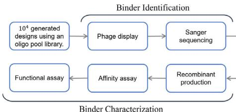
Experiment Pipeline
c
De novo Design with Best Affinity
| Binding KD↓ (nM) | Edit distance to the closest antibody | ||||||
| CDR-H3↑ | CDR-H↑ | VH↑ | VL↑ | FR-H↑ | FR-L↑ | ||
| Flu A | 3.22 | 8 | 12 | 26 | 15 | 8 | 7 |
| PD-1 | 81.6 | 5 | 6 | 8 | 8 | 0 | 1 |
| PD-L1 | 0.045 | 6 | 8 | 9 | 12 | 1 | 1 |
| SC2RBD | 2.0 | 5 | 10 | 19 | 10 | 3 | 0 |
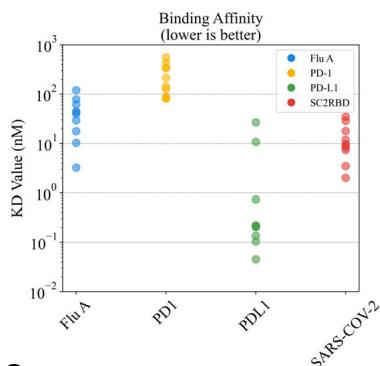
d

Result of De novo Design


e
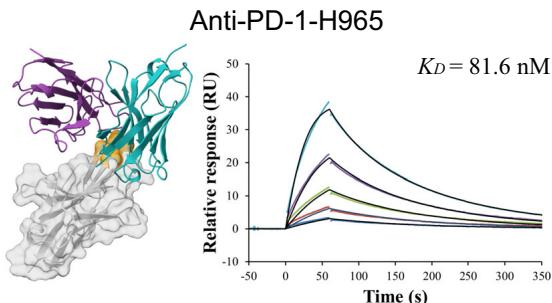
f
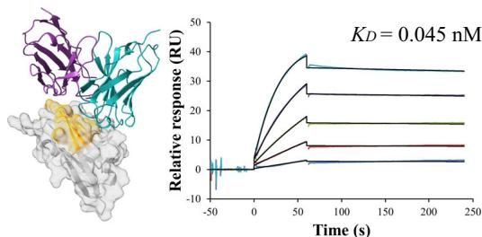
g

are primarily linked to the intrinsic properties of the antigens themselves.
To prioritize leads for therapeutic development, we focused on the highest-affinity antibody for each target. Notably, the best PD-L1 antibody achieved a picomolar \(K _ { \mathrm { D } }\) values of 45 pM. For Flu A and KSC2RBD, the top antibodies demonstrated low-nanomolar affinities of
\(3 . 2 2 \mathsf { n M }\) and \(2 . 0 \mathsf { n M }\) , respectively, while the best PD-1 antibody exhibited a moderate affinity of 81.6 nM. (Fig. 1c).
Figure 1(e–h) presents the predicted antibody-antigen structures and SPR binding curves for the highest-affinity antibodies designed against four target proteins: Flu A (e), PD-1 (f), PD-L1 (g), and SC2RBD (h). While panels (f–h) meet the criteria for the highest affinity, panel
Fig. 1 | Overview and experimental performance of the tFold system for de novo antibody design. a Workflow of the tFold system for de novo antibody design. The generator inputs the antibody framework, antigen sequence, and specified epitope, producing designed structures and sequences of antibody candidates. The filter consists of a series of models that predict whether a design will bind, with the final results validated through experimental validation. b Experimental validation workflow utilized in this study. Phage display and Sanger sequencing were employed to screen for binding antibodies from the designed libraries. The identified binding antibodies were then individually produced as Fc-fusions (a therapeutically relevant format) and characterized for their affinity and functional characteristics. c Results showcasing the affinity and novelty of the best antibodies
designed by the tFold system for four different targets. Affinity is evaluated using binding \(K _ { \mathrm { D } }\) through SPR. Novelty is measured using the edit distance to the closest antibody in various regions of the antibody sequence. d Distribution of affinity (left) and novelty (middle and right) for all binding antibodies synthesized by the tFold system across the four targets. The size of the bubbles indicates the frequency of identical values, with larger bubbles representing higher frequencies.
e–h Predicted complex structures of the high affinity antibodies (blue for the heavy chain, purple for the light chains) designed by the tFold system alongside their corresponding antigens (gray) and specific epitope (orange), as well as SPR curves demonstrating their high-affinity binding.
Table 1 | Sequence and length of antibody templates for the tFold system inputs in our experiments, the antibody numbering scheme employed is Chothia
| Region | Sequence | Length |
| FR-H1 | EVQLLESGGGLVQPGGSRLRLSCAAS | 25 |
| FR-H2 | AMSWVRQAPGKGLEWVSAI | 19 |
| FR-H3 | TYYADSVKGRFTISRDSNKNTLYLQMNSLRAEDTAVYYCAK | 41 |
| FR-H4 | WGQGTLVTVSS | 11 |
| FR-L1 | DIQMTQSPSTLSASVGDRVITIC | 23 |
| FR-L2 | WYQQKPGKAPKLLIY | 15 |
| FR-L3 | GVPSRFSGSGSGTEFTLTISSLQPDDFATYYC | 32 |
| FR-L4 | FGQGTKVEIK | 10 |
| CDR-H1 | - | 7 |
| CDR-H2 | - | 6 |
| CDR-H3 | - | 7-18 |
| CDR-L1 | - | 11 |
| CDR-L2 | - | 7 |
| CDR-L3 | - | 9-11 |
The CDRs in the antibody templates are represented by “X” of varying lengths, which will be reconstructed by the model.
- displays the second-highest-affinity antibody for Flu A. This exception occurs because the highest-affinity Flu A candidate binds outside the intended epitope. The designated epitopes are highlighted in yellow, and the high-confidence structures predicted by tFold-Ag and AlphaFold-Multimer confirm that our designed antibodies can effectively bind to their corresponding epitopes. The SPR curves indicate rapid association and slow dissociation kinetics, which are characteristic of high-affinity binding.
To validate the de novo nature of our designs rather than modifications of existing antibodies or CDR grafting, we rigorously assessed sequence novelty metrics against known antibodies in public databases (SAbDab23, TheraSAbDab37, PLAbDab38, and CoV-AbDab39). Edit distances to the closest antibody were calculated separately for each known antigen-specific antibody subset, ensuring unbiased assessment of novelty across all regions, including FR, CDRs, variable domains (VH/VL) and CDR-H3. The distribution of affinity and novelty metrics for all binding antibodies synthesized by the tFold system across the four targets is shown in Fig. 1d. Analysis of CDR3 and overall CDR edit distances relative to the closest known antibodies reveals that, with the exception of the PD-1-targeted antibody, all designs exhibited clear novelty in their CDR-H3 regions (edit distance \({ \geq } 3 )\) ). Although the PD-1 antibody showed comparatively lower novelty scores, its CDR edit distance to the closest database entry still reached \({ \geq } 5 .\) . Having established the novelty of generated antibodies, we further investigated whether this originality persists in the highest-affinity candidates—a critical consideration for therapeutic development.
For PD-1 and PD-L1, where established therapeutic antibodies share identical V genes (e.g., \(\mathtt { D 1 2 ^ { 4 0 } }\) for PD-1 and GNC-03841 for PD-L1),
our designs exhibited substantial divergence in CDR-H3. The PD-1 antibody exhibited a CDR-H3 edit distance of 5 (with D12’s CDR-H3 length of 9 compared to our design’s 8 residues), while the PD-L1 antibody displayed a CDR-H3 edit distance of 6 (with GNC-038’s CDR-H3 length of 11 compared to our design’s 12 residues). For Flu A and SC2RBD, no antibodies with identical V genes exist in public databases. Notably, the Flu A design demonstrated an FR-H edit distance of 26 relative to the closest known antibody, indicating complete framework novelty. Despite CoV-AbDab containing over 4000 SC2RBD-targeting antibodies, our design showed no homology in CDR-H (edit distance \({ } = 1 0\) ) and CDR-H3 (edit distance \({ } = 5\) ). These results confirm that the tFold system’s ability to generate antibodies even against wellcharacterized targets.
tFold system can design diverse antibodies for targeting specific epitopes
Unlike antibody engineering, de novo antibody design generates diverse candidate antibodies with significant variability, particularly in the CDR-H3. Figure 2a illustrates the CDRs of our expressed PD-L1 antibodies. We observed that while CDR-H1 and CDR-H2 displayed moderate similarity (dictated by the V gene), CDR-H3 and CDR-L3 demonstrated remarkable diversity. This combinatorial diversity in CDR regions dramatically expands the druggable sequence space42, enabling systematic exploration of non-immunogenic paratopes that would otherwise remain inaccessible through conventional immunization or library screening methods. CDR-3 variations generated distinct antigen–antibody interaction interfaces. Structural prediction models (tFold-Ag/AlphaFold-Multimer) further validated that these computationally designed antibodies bind specifically at the PD-1/PD-L1 interaction interface, highlighting the efficacy of our structuredriven computational workflow.
Antibodies can exert different functions by binding to various epitopes on an antigen43. Therefore, we selected targets that possess multiple distinct epitopes44–47, with the aim of designing antibodies that specifically bind to certain epitopes to elicit the desired functions. To validate the epitope specificity of our antibodies, we conducted competition assays using SPR to evaluate their ability to block the binding of the antigen to its receptor or ligand.
The interaction between PD-1 and PD-L1 elicits inhibitory signaling that suppresses T-cell activation through negative immunoregulatory mechanisms48. To counteract this interaction, we engineered antibodies targeting specific epitopes within the PD-1/PD-L1 interaction interface, leveraging their superior binding affinity to sterically disrupt the native PD-1/PD-L1 complex.
Among the candidates generated by the tFold system, three topaffinity antibodies identified through quantitative binding assessments demonstrated complete blockade efficacy in competition assays using SPR. Both PD-1-directed and PD-L1-targeted antibody formats effectively prevented PD-1/PD-L1 ligation, an outcome consistent with the potential to restore T-cell effector function through precise interference with this immune checkpoint axis49. We focused on the highest-affinity anti-PD-1 antibody (anti-PD-1-H965) and anti-PD-L1 antibody (anti-PD-L1-H635). Specifically, the SPR measurements for

a
Epitope-specific Designs

b

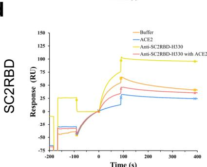
d
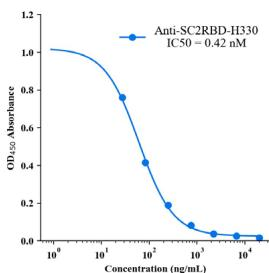

e
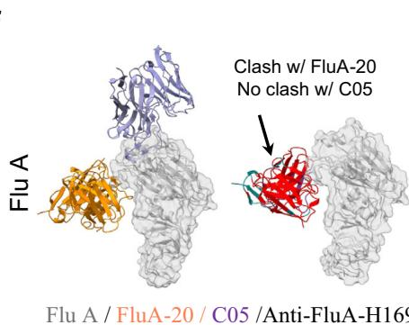
f

g
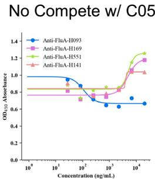
h
anti-PD-1-H965 and anti-PD-L1-H635 highlighted their competitive binding capabilities: anti-PD-1-H965 exhibited strong binding to PD-1 alone, but its response units (RU) significantly decreased in the presence of PD-L1, confirming its competition with PD-L1 for PD-1 binding. Similarly, anti-PD-L1-H635 showed substantial binding to PD-L1 alone, yet its RU values markedly declined when combined with PD-1, demonstrating its competition with PD-1 for PD-L1 binding (Fig. 2b).
Structural alignment between the predicted antibody-antigen complexes and the PD-1/PD-L1 complex (PDB ID: 4ZQK50) revealed that the epitopes targeted by our designed antibodies correspond to a portion of the PD-1/PD-L1 binding site. Additionally, the spatial arrangement of the antibodies indicated their clash with the receptor, which aligns with our expectations. (Fig. 2c).
Fig. 2 | tFold system demonstrates diverse design capabilities for targeting antigen epitopes as intended. a CDR multiple sequence alignment of ten highaffinity Fab designed by the tFold system, highlighting significant diversity in both the lengths and sequences of CDR-H3 and CDR-L3. b Binding of anti-PD-1-H965 and anti-PD-L1-H635 to their respective epitopes was confirmed through SPR competition assays with PD-L1 (top) and PD-1 (bottom). c Predicted structural models indicate that our de novo antibodies (anti-PD-1-H965 and anti-PD-L1-H635, with blue representing the heavy chain and purple the light chains) effectively block the interaction between PD-1 and PD-L1 (PDB ID: 4ZQK, with gray for PD-1 and orange for PD-L1). The overlap between the epitopes of designed antibodies and epitopes of receptor is highlighted in yellow. The spatial clash between the antibodies and the receptor is highlighted in red. d The binding of anti-SC2RBD-H330 to the expected epitope was confirmed through SPR competition assays with ACE2. By blocking the interaction between SC2RBD and ACE2, anti-SC2RBD-H330 effectively neutralizes the virus, demonstrating an IC50 of 0.42 nM. e Predicted structural
models confirm that anti-SC2RBD-H0330, with blue for the heavy chain and purple for the light chains, can inhibit the interaction between SC2RBD and ACE2 (PDB ID: 6M0J, with gray for SC2RBD and orange for ACE2), thereby neutralizing the SC2RBD. The spatial clash between the antibody and ACE2 is highlighted in red. f Predicted structural models confirm that anti-FluA-H169, represented in blue for the heavy chain and purple for the light chains, shares similar epitopes with the broad-spectrum antibody FluA-20 (PDB ID: 6OCB, colored by orange), while exhibiting distinct epitopes compared to another antibody, C05 (PDB ID: 4FP8, colored by violet). The spatial clash between anti-FluA-H169 and FluA-20 is highlighted in red. g The binding of anti-FluA-H169 to the expected epitope was confirmed through SPR competition assays with FluA-20. The presence of FluA-20 affected the binding signal of the antibody anti-FluA-H169 to the antigen Flu A. h ELISA-based epitope-specific analysis of our designed Flu A antibodies. Our designed Flu A antibodies and C05 do not share overlapping epitopes.
The high-affinity binding of SC2RBD to the ACE2 receptor on host cells initiates viral membrane fusion, enabling endocytosis and the release of the viral genome, which establishes infection and facilitates systemic dissemination51. In comparison to PD-1 and PD-L1, designing an ACE2 blocker is more challenging for several reasons: (1) SC2RBD has a longer length and a structurally more complex epitope; (2) the affinity between SC2RBD and ACE2 is in the nanomolar range52, which necessitates that antibodies exhibit sufficiently high affinity to effectively inhibit the binding of SC2RBD to ACE2, thereby neutralizing the virus.
We selected five top-affinity antibodies for competition assays using SPR. Notably, 2 out of the five antibodies were recognized as effective blockers. Among these, we focused on the SC2RBD antibody with highest-affinity (anti-SC2RBD-H330). The SPR measurements for anti-SC2RBD-H330 showed its competitive binding capabilities with ACE2. Furthermore, we found that its neutralization capacity yielded an IC50 of 0.42 nanomolar (Fig. 2d). By aligning the predicted structure of the tFold system-generated antibody-antigen complex with the SC2RBD/ACE2 complex structure (PDB ID: \(6 \mathsf { M O J } ^ { 5 2 } .\) ), we found that the epitope targeted by our designed antibody corresponds to a portion of the binding site between SC2RBD and ACE2. Additionally, the spatial arrangement indicated a clash between the antibody and the receptor, which aligns with experiments (Fig. 2e). Although the structures of the other three antibodies predicted by our model also bound to the correct epitope and exhibited high confidence scores \(_ { ( > 0 . 7 ) }\) , the competition experiments revealed that they were unable to compete with ACE2. This observation highlights the limitations of the tFold system’s structural predictions, which still exhibit instances of false positives.
Flu A possesses multiple epitopes44, and FluA- \(2 0 ^ { 5 3 }\) is a broadspectrum antibody that binds with high affinity to conserved residues in the head region of the Flu A HA1. Our objective was to design antibodies with epitopes similar to those of FluA-20 to confer broadspectrum properties.
We selected the top four Flu A antibodies with the highest affinity and conducted competition assays with FluA-20 using SPR. Our results indicated that the binding signals of three out of the four designed Flu A antibodies (anti-FluA-H141, anti-FluA-H169, and anti-FluA-H551) were significantly affected in the presence of FluA-20. This finding suggests that these antibodies share similar epitopes with FluA-20, which aligns with our structural predictions (Fig. 2f, g). In contrast, the binding signal of the antibody with the highest affinity, anti-FluA-H093, remained unaffected. Despite high-confidence predictions from the structural model, this antibody appears to bind to an incorrect epitope. Notably, the affinity of FluA-20 for Flu A (<nM) is substantially stronger than that of our designed antibodies (from 10 to 30 nM), placing our antibodies at a competitive disadvantage.
To further validate the epitope-specific of our designed antibodies, we introduced antibody \({ \mathsf { C } } { \mathsf { 0 } } { 5 } ^ { 5 4 }\) , which targets distinct regions
of Flu A compared to FluA-20. Using ELISA, we confirmed that there was no competition between C05 and our designed antibodies (Fig. 2h). This result is consistent with their intended targeting of the FluA-20 epitope, effectively ruling out interference from neighboring sites and validating the specificity of our design strategy.
We have demonstrated the experimental validation of the tFold system across four distinct therapeutic targets. Next, we will return to the tFold system to elucidate how it addresses various challenges associated with the de novo design of epitope-specific antibodies.
tFold-Ab: fast and accurate antibody structures prediction
The accurate prediction of antibody structures is crucial for understanding their function and is a prerequisite for the tFold system in antibody design. The component of the tFold system responsible for predicting antibody structures is referred to as tFold-Ab, which can independently generate high-resolution, atomic-level 3D structures of antibodies from their amino acid sequences in seconds.
The tFold-Ab consists of four main modules that include a pretrained protein language model (PLM): ESM-PPI, a feature updating module: Evoformer-Single stack, a structure module, and a recycling module (Fig. 3a). The ESM-PPI module extracts both intra-chain and inter-chain information of the protein complex to generate features for the downstream structure prediction task. We develop ESM-PPI by extending the current ESM-2 model55 through further pre-training using both monomers and multimers. This enhancement enables the model to effectively extract inter-chain information. The Evoformer-Single stack updates and refines the input features from the ESM-PPI, iteratively update the sequence and pairwise representations. The structure module, which performs SE(3)-equivariant updates using invariant point attention56, then maps the obtained representation to predicted atomic-level 3D structures. Finally, the recycling module allows tFold-Ab to reuse the features and structure predictions of the previous iteration, enhancing the final structure prediction quality.
tFold-Ab achieves state-of-the-art computational efficiency in antibody structure prediction by utilizing ESM-PPI instead of traditional MSA-based methods for co-evolutionary information extraction. It features an optimized Evoformer-Single stack and a structure module for end-to-end prediction of backbone and side-chain conformations. In contrast, existing methods like DeepAb57 and IgFold58 rely on time-consuming Rosetta-based energy minimization for side-chain prediction, while Chai- \(\cdot 1 ^ { 5 9 }\) requires extensive sampling via diffusion. This MSA-free design yields substantial speed gains: compared to the heavily engineered AlphaFold-3 Server, tFold-Ab offers a 50-fold advantage, and as shown in Fig. 3b and Supplementary Fig. 2 it is 5000 times faster than AlphaFold-Multimer28. Even when compared to an AlphaFold-Multimer variant that omits MSA and template search, tFold-Ab demonstrates superior speed. This indicates the efficiency of the Evoformer-Single over the conventional Evoformer. Although

a
tFold-Ab Model Pipeline

b
Runtime Analysis
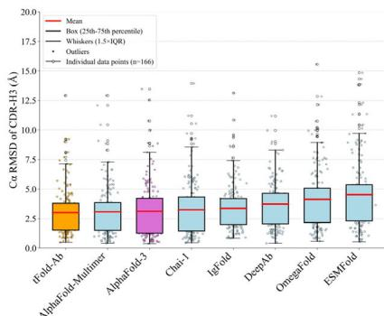
c
Antibody CDR-H3 Pred

d
Nanobody CDR-3 Pred

e
VH-VL Orientations
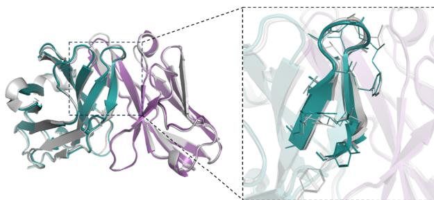
f
Antibody CDR-H3 Prediction Example
RMSD=0.427Å, \(N _ { r e s } { = } 2 2 7\) , PDB ID=7OX3, chain ID=A,B
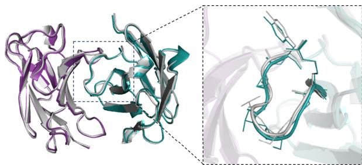
RMSD=0.424Å \(N _ { r e s } { = } 2 2 7\) , PDB ID=7RPT, chain ID=H,L
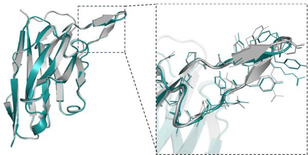
g
Nanobody CDR-3 Prediction Example
RMSD= 0.292Å \(N _ { r e s } { = } 1 3 0\) , PDB ID=7WD1, chain \(\mathrm { I D } { = } \mathrm { H }\)

RMSD=0.556A, \(N _ { r e s } { = } 1 1 5\) , PDB ID=7OCJ, chain ID=B
EquiFold60 achieves a slightly faster computational speed than tFold-Ab (1.02 vs. 1.15 s), its performance is significantly inferior \(( P { = } 0 . 0 4 9 )\) ).
PIn addition to computational efficiency, the prediction accuracy of antibody structure is also crucial. To conduct a comprehensive evaluation of tFold-Ab’s performance, we have curated a test set, held out from the training and validation data, based on a cutoff date of 01 July 2022. It comprises two non-redundant benchmark subsets, namely
SAbDab-22H2-Ab and SAbDab-22H2-Nano, which include 169 paired antibodies and 73 single-chain nanobodies, respectively. We utilize the widely adopted temporally separated approach during data preparation to guarantee fair comparisons between tFold-Ab and other existing methods.
As illustrated in Fig. 3c and Table 2, tFold-Ab achieves high performance in antibody structure prediction with average root-mean-
Fig. 3 | Overview and performance evaluation of the tFold-Ab. a Overview of the tFold-Ab architecture, with arrows indicating the direction of information flow. Gradient backpropagation is only enabled for dark arrows, but not for light arrows. b Runtime analyses for tFold-Ab on 169 antibodies in SAbDab-22H2-Ab \(( n = 1 6 9 )\) ). Comparisons to EquiFold, IgFold, Chai-1, DeepAb, AlphaFold-Multimer and AlphaFold-3. All runtimes were measured on a single NVIDIA A100 GPU with 21 CPU cores, except for AlphaFold-3, which was run on the AlphaFold Server with default settings. c, d Performance comparison of tFold-Ab with other structure prediction methods on SAbDab-22H2-Ab \(( n = 1 6 9 )\) ) and SAbDab-22H2-Nano \(\scriptstyle ( n = 7 3 )\) test sets, evaluated by backbone RMSD in CDR-H3 for antibodies and CDR-3 for nanobodies,
represented as mean values with a \(9 5 \%\) confidence interval. e DockQ evaluation performance on the SAbDab-22H2-Ab $( n = 1 6 9 $ ). f Comparison of our predicted structures for antibody targets (PDB 7OX3 and 7RPT, blue for the heavy chain, purple for the light chains) with their respective experimental structures (gray). The accurate prediction of the CDR-H3 region by tFold-Ab for both side and main chains is particularly noteworthy. g Comparison of our predicted structures for nanobody targets (PDB 7WD1 and 7OCJ, blue for the heavy chain) with their respective experimental structures (gray). The accurate prediction of the CDR-H3 region by tFold-Ab for both side and main chains is particularly noteworthy.
Table 2 | Performance of antibody structure prediction on the SAbDab-22H2-Ab benchmark
| Method | OCD | H-Fr | H1 | H2 | H3 | L-Fr | L1 | L2 | L3 |
| AlphaFold-3 | 4.68 | 0.63 | 0.92 | 0.87 | 3.12 | 0.60 | 0.91 | 0.74 | 1.21 |
| AlphaFold-Multimer | 5.13 | 0.66 | 0.93 | 0.90 | 3.07 | 0.62 | 0.97 | 0.77 | 1.27 |
| Chai-1 | 4.55 | 0.65 | 0.98 | 0.92 | 3.25 | 0.62 | 0.99 | 0.76 | 1.32 |
| EquiFold | 5.07 | 0.69 | 1.06 | 0.95 | 3.39 | 0.66 | 1.10 | 0.84 | 1.38 |
| Uni-Fold_MuSSe | 4.93 | 0.65 | 0.99 | 0.95 | 3.41 | 0.62 | 0.97 | 0.76 | 1.30 |
| ESMFold | - | 0.70 | 1.09 | 1.10 | 4.53 | 0.66 | 1.19 | 0.80 | 1.67 |
| OmegaFold | - | 0.69 | 1.00 | 0.95 | 4.14 | 0.63 | 1.02 | 0.77 | 1.48 |
| HelixFold-Single | - | 0.77 | 1.05 | 1.16 | 5.30 | 0.71 | 1.20 | 0.87 | 1.79 |
| IgFold | 5.31 | 0.69 | 1.00 | 1.01 | 3.37 | 0.65 | 1.02 | 0.79 | 1.34 |
| DeepAb | 4.65 | 0.67 | 1.04 | 1.00 | 3.73 | 0.61 | 1.03 | 0.79 | 1.35 |
| ImmuneBuilder | 5.16 | 0.69 | 1.03 | 1.00 | 3.46 | 0.65 | 1.02 | 0.83 | 1.26 |
| tFold-Ab | 4.20 | 0.61 | 0.92 | 0.84 | 3.01 | 0.57 | 0.87 | 0.73 | 1.12 |
OCD (orientational coordinate distance), backbone RMSD (the rest of columns) in different framework and CDRs are reported, the bold values indicate the minimum (best-performing) results. In the case of monomer structure prediction methods, the heavy and light chains are predicted separately, and the OCD metric is not evaluated (denoted by \(" - \prime \prime )\) . The antibody numbering scheme employed is Chothia. H-Fr indicates the Fr of H chain and H1-H3 indicate the CDRs of H chain. L-Fr indicates the Fr of L chain and L1-L3 indicate the CDRs of L chain. AlphaFold-3 uses the default parameters of the AlphaFold Server (one random seed, five samplings, and selects the result with the highest ranking score for evaluation).
squared-deviation (RMSD) values of 0.61 Å and 0.57 Å for the FR in the heavy chains and light chains, respectively. In the more complex task of predicting the CDRs, tFold-Ab achieves average RMSD of 0.92, 0.84, and 3.01 Å in the CDR-1, CDR-2, and CDR-3 regions of the heavy chains (denoted as H1, H2, and H3 regions), along with RMSD of 0.87, 0.73, and 1.12 Å in the corresponding CDRs of the light chains (denoted as L1, L2, and L3 regions). All RMSD scores are calculated over the backbone heavy atoms, following the alignment of the respective framework residues. We compared tFold-Ab with the currently existing general protein structure prediction methods, including AlphaFold- \(\cdot 3 ^ { 2 9 }\) , AlphaFold-Multimer28, ESMFold55, Chai-159, as well as antibody-specific methods, including IgFold58, DeepAb57, ImmuneBuilder61. In the FRs, all the examined methods consistently exhibited the highest performance compared to other regions. The CDR-H3 and CDR-L3, however, are the most challenging components for prediction, due to the significant sequence and structural diversities in these regions. Overall, tFold-Ab demonstrates superior performance compared to both general protein structure prediction methods and antibody-specific methods across all framework regions and CDRs of both chains.
The anticipated orientation between the heavy and light chains plays a crucial role in determining the overall binding surface. To assess the accuracy of the inter-chain orientation, we measured the orientational coordinate distance \(( \mathrm { O C D } ) ^ { 6 2 }\) . Our findings indicate that, in general, tFold-Ab achieves significantly better OCD values compared to the other methods evaluated, with a substantial margin. Specifically, tFold-Ab yields an OCD of 4.20, while the competing methods range from 4.55 to 5.31. To further evaluate the accuracy of the predicted antibody complex structure of paired chains, we include four metrics, including the DockQ, fraction of native contacts (Fnat), ligand rootmean-square deviation (LRMS), and the interface root-mean-square deviation (iRMS). As shown in Supplementary Table 3, AlphaFold-3
achieves the best performance among the evaluated methods, with an average DockQ score of 0.781, while tFold-Ab has a score of 0.77. In addition, tFold-Ab achieves the lowest average LRMS and iRMS scores, indicating its exceptional accuracy in predicting both ligand and interface positions.
Nanobodies, as a promising format for therapeutic development, have gained considerable attention currently. Different from the paired antibodies, nanobodies lack the second immunoglobulin chain. This characteristic, coupled with the increased length of the nanobody CDR-3 loop, results in a wide range of CDR-3 conformations that are not typically observed in paired antibodies63. The performance of tFold-Ab and other existing general and antibody-specific methods is compared in Fig. 3d and Table 3. All evaluated methods show the highest accuracy in framework regions, highlighting their predictability. In contrast, the CDR-3 loop presents the greatest challenge due to its complexity and variability. Generally, tFold-Ab performs well in most regions, especially in the challenging CDR-3 region, where its average RMSD is \(3.57 \text{ Å}\), compared to baseline RMSDs ranging from 3.57 to \(9.03 \text{ Å}\).
Figure 3f, g present example predicted structures of antibodies and nanobodies, providing an intuitive visualization of the prediction results. It is observed that tFold-Ab is capable of providing highly accurate predictions for the CDR-H3 and the CDR-3, which are the most challenging regions in the structure prediction of antibodies and nanobodies, respectively.
tFold-Ag: fast modeling of antibody-antigen complex structures The component of the antibody-antigen complex prediction model employed in the Fold System, termed tFold-Ag, is illustrated in Fig. 4a. tFold-Ag comprises three main components: the antibody feature generation unit, the antigen feature generation unit, and the
Table 3 | Performance of nanobody structure prediction on the SAbDab-22H2-Nano benchmark
| Method | Fr | CDR-1 | CDR-2 | CDR-3 |
| AlphaFold-3 | 0.68 | 1.73 | 1.14 | 3.57 |
| AlphaFold | 0.71 | 1.96 | 1.20 | 3.96 |
| Chai-1 | 0.73 | 1.80 | 1.13 | 3.57 |
| ESMFold | 0.70 | 1.87 | 1.34 | 3.80 |
| OmegaFold | 0.73 | 1.77 | 1.34 | 3.63 |
| HelixFold-Single | 0.76 | 1.92 | 1.27 | 4.16 |
| IgFold | 0.73 | 1.97 | 1.29 | 4.64 |
| DeepAb | 0.93 | 2.36 | 1.51 | 9.03 |
| ImmuneBuilder | 0.75 | 1.91 | 1.23 | 3.79 |
| tFold-Ab | 0.67 | 1.95 | 1.20 | 3.57 |
Reported are the backbone RMSD across vaious framework and CDRs, utilizing Chothia as the antibody numbering scheme, the bold values indicate the minimum (best-performing) results. AlphaFold-3 uses the default parameters of the AlphaFold server (one random seed, five samplings, and selects the result with the highest ranking score for evaluation).
representation-driven flexible docking unit. The antibody feature generation unit utilizes the pre-trained tFold-Ab to extract sequence and pair representations, as well as the initial atomic coordinates of the antibodies, while remaining fixed during training to optimize model convergence. The antigen feature generation unit employs the pretrained AlphaFold256 to derive MSA and pair representations together with initial structures of diverse antigens, enhancing tFold-Ag’s generalizability across various sources. The representation-driven flexible docking unit consists of a feature fusion module and a complex structure prediction module. After obtaining the necessary representations and coordinates from the feature generation units, the feature fusion module integrates this information to create initial representations of the antibody-antigen complex. The complex structure prediction module, featuring an Evoformer-Single stack with 32 blocks and a structure module with 8 blocks, updates these representations and maps them to the predicted complex structure, providing confidence scores. In the representation-driven flexible docking unit, tFold-Ag not only calculates the conformation of the antibodyantigen complex but also updates the structures of both the antibody and antigen, allowing for refinement of the initially extracted structures (Supplementary Fig. 6). For example, the prediction accuracy of the highly variable CDR-H3 region improves in tFold-Ag, with RMSD decreasing from 3.21 Å to 3.07 Å when accurate epitope information is available (Supplementary Table 16). Additionally, an extra sequence recovery module is integrated to facilitate antibody design. During training, tFold-Ag simultaneously optimizes shared and specific modules for complex structure prediction and antibody design, functioning as a multi-task model. This optimization acts as a regularization task, benefiting both structure prediction and antibody design.
We curate a hold-out test set to evaluate the performance of structure prediction methods on antibody-antigen complexes from the SAbDab23, using a temporally separated approach. To ensure fair comparison with existing methods like AlphaFold-Multimer56 and AlphaFold \(\cdot 3 ^ { 2 9 }\) , we set the cutoff date to July 1, 2022, ensuring that none of the evaluated methods has seen the test set structures. The final test set consists of two non-redundant benchmark subsets: SAbDab-22H2- AbAg, which includes 99 antibody-antigen complexes, and SAbDab-22H2-NanoAg, which includes 41 nanobody-antigen complexes.
We compare tFold-Ag with currently available end-to-end methods64,65, including AlphaFold-Multimer28 and AlphaFold- \(\cdot 3 ^ { 2 9 }\) , as well as docking-based methods such as conventional docking methods66–68 and deep-neural-network-involved docking methods69–71. As illustrated in Fig. 4b and Table 4, AlphaFold-3 significantly outperforms other methods on the SAbDab-22-AbAg test set, achieving a
DockQ score of 0.257 and a success rate (SR, the proportion of predicted structures that meet an acceptable criterion \(\mathrm { ( D o c k Q > 0 . 2 3 ) }\) ) of \(3 2 . 3 \%\) , making it the only method to have a SR above \(30 \%\) . The proposed tFold-Ag ranks second, outperforming other end-to-end and docking-based methods with a DockQ score of 0.217 and a SR of \(2 8 . 3 \%\) . AlphaFold-Multimer ranks third, with a DockQ score of 0.158 and a SR of \(1 8 . 2 \%\) . A similar trend is observed in the prediction of nanobody–antigen complexes (Fig. 4b and Supplementary Table 2), where AlphaFold-3 demonstrates even greater superiority, achieving a DockQ score of 0.296 and a SR of \(3 4 . 2 \%\) , significantly surpassing both tFold-Ag and AlphaFold-Multimer. In this context, tFold-Ag achieves a SR of \(1 9 . 5 \%\) , slightly outperforming AlphaFold-Multimer, which has a SR of \(1 4 . 5 \%\) . The overall performance of tFold-Ag is limited by its training on SAbDab data alone, in contrast to AlphaFold-3, which is trained on comprehensive molecular data using diffusion-based sampling. This limitation is particularly evident in nanobody–antigen complexes, where fewer experimental structures are available for model training. As a result, tFold-Ag performs worse on nanobody–antigen complexes compared to antibody-antigen complexes due to the lack of training data. Nevertheless, tFold-Ag demonstrates a \(32 \%\) improvement in SR compared to AlphaFold-Multimer.
Although tFold-Ag slightly lags behind AlphaFold-3 in prediction accuracy, it offers significantly optimized computational speed. tFold-Ag is over ten times faster than MSA-based structure prediction methods (e.g., AlphaFold-Multimer and AlphaFold-3) for antibodyantigen complex predictions across varying sequence lengths (Fig. 4c and Supplementary Fig. 8). This speed advantage arises from tFold-Ag’s use of the Antibody and Antigen Feature Generation Unit, which extracts features without the need for MSA searches. The strong performance of tFold-Ab has demonstrated that antibody structural features can be effectively modeled by language models. Additionally, due to the sparse co-evolutionary information between antigens and antibodies, MSA pairing is unnecessary. We employ a representationdriven flexible docking unit to simulate the docking performance of antibodies and antigens, achieving good structural prediction while significantly optimizing speed. Consequently, the speed advantage of tFold-Ag will become increasingly pronounced when predicting complex structures for multiple antibodies against a specific target antigen in a high-throughput manner. As the antigen feature generation unit is the most time-consuming component due to MSA, the average time required for predicting each antibody-antigen complex will decrease with an increasing number of antibodies screened against a particular antigen (Supplementary Fig. 8).
Figure 4d illustrate examples of predicted antibody-antigen and nanobody–antigen complexes, along with the corresponding experimental structures, demonstrating that tFold-Ag can provide highquality predictions of the interaction interfaces between antibodies or nanobodies and antigens.
In structural biology, alongside direct experimental methods like cryo-electron microscopy, there are more cost-effective and accessible approaches that provide valuable interaction interface information, which can serve as structural constraints in protein complex predictions. For instance, chemical cross-linking (XL) technology reveals distances between residues linked by fixed-length reagents, translating into contacts between antibodies and antigens. Additionally, deep mutation scanning offers insights into protein–protein interaction (PPI) information, including antigen epitopes and antibody paratopes. While these experimental constraints are sparse and insufficient for complete structural determination, they provide critical insights into the interaction interfaces. In tFold-Ag, we propose to integrate extra structure restraint feature for better protein complex structure prediction by utilizing a specially designed Inter-chain feature embedding module, which incorporates interface information into the single and pair representations generated by the feature fusion module. We
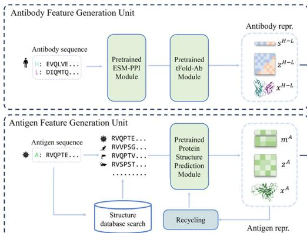
a
tFold-Ag Model Pipeline


Complex Interface Prediction
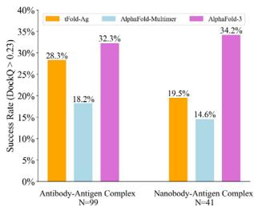

c
Runtime Analysis

d
Complex Interface Prediction Example


e
Improving Accuracy using Extra Structure Restraints
f

Correlation between ipTM and DockQ


g
Performance Complementary with AF

denote tFold-Ag utilizing PPI information (antigen epitope sites or both antigen epitope and antibody paratope sites) as tFold-Ag-ppi, and the more detailed contact information (contact maps between epitope and paratope sites) as tFold-Ag-contact. Our findings indicate that tFold-Ag significantly benefits from additional structural constraints, with performance improvements correlating with the detail of interaction interface information (Table 4 and Supplementary Table 2).
When provided with both antigen epitope and antibody paratope information, tFold-Ag achieves a DockQ score of 0.416 for antibody–antigen structure prediction and 0.316 for nanobody–antigen structures (Table 4 and Supplementary Table 2). Figure 4e illustrates an example where tFold-Ag incorrectly predicts the interface for \(8 \mathsf { D } \mathsf { S } 5 ^ { 7 2 }\) . When provided with the accurate antigen epitope, tFold-Ag-ppi achieves a DockQ score of 0.38. Furthermore,
Fig. 4 | Comprehensive analysis and performance evaluation of the tFold-Ag. a Overview of the tFold-Ag architecture. Arrows show the information flow direction. The dark arrows indicate that gradient is used while the light arrows indicate that gradient is not used. Here, repr. denotes representation. b The antibodyantigen interaction accuracy and success rate of tFold-Ag, AlphaFold-Multimer, and AlphaFold-3 on SAbDab-22H2-AbAg \(( n = 9 9 )\) ) and SAbDab-22H2-NanoAg \(( n = 4 1 )\) test sets. c Runtime analysis of tFold-Ag on 99 antibody-antigen complexes from SAbDab-22H2-AbAg \(( n = 9 9 )\) , compared with AlphaFold-Multimer. All runtimes were measured on a single NVIDIA A100 GPU with 21 CPU cores. AlphaFold-Multimer with MMseqs2-accelerated MSA search and AlphaFold-Multimer with default settings are reported separately. d Comparison of our predicted structures for antibody-antigen complex target 7WSL and nanobody-antigen complex target 7SAI (blue for heavy chain, purple for light chain, and green for antigen chain) with their respective experimental structures (gray). The interface of antigen and antibody and nanobody is well predicted. e Integration of extra structural restraints can improve tFold-Ag’s prediction accuracy for 8DS5 (blue for heavy chain, purple for light chain, green for antigen chain, and orange for extra structural restraints).
f Correlation between ipTM and DockQ. Results for two versions (tFold-Ag and tFold-Ag-ppi, which uses epitope as an additional input) are reported. Left: linear fit of DockQ versus ipTM for tFold-Ag shows a least-squares linear fit of DockQ \(=\) \(0 . 8 0 \times \mathrm { i p T M } - 0 . 1 4\) (Pearson’s \(r { = } 0 . 7 7\) , \(P { = } 1 . 2 \times 1 0 ^ { - 2 0 } ,\) . For tFold-Ag-ppi, the leastsquares linear fit is DockQ \(\tan \beta = 0 . 8 7 \times \mathrm { i p T M } - 0 . 2 4\) (Pearson’s \(r { = } 0 . 5 9\) , \(P { = } 1 . 6 \times 1 0 ^ { - 1 0 } ,\) ) in SAbDab-22H2-AbAg \(\scriptstyle ( n = 9 9 )\) ). Right: the values of ipTM are divided into three intervals, reporting the median and distribution of DockQ for each interval, with indicating the number of clusters in each band. g The head-to-head comparison between the best model generated by tFold-Ag and AlphaFold-Multimer (left), tFold-Ag and AlphaFold-3 (right), and the ensemble model selected by confidence score. Statistical equivalence between the ensemble and best models was assessed using paired two one-sided t-tests (TOST) with an equivalence margin \(\delta = 0 . 0 5 .\) . For tFold-Ag vs AlphaFold-3: mean difference (Ensemble-Best) \(= - 0 . 0 2 0 7\) , \(\mathbf { t 1 } = 5 . 7 7 0 2\) , \(\pmb { \mathrm { t } } 2 = - 1 3 . 9 5 2 1\) , \(p 1 < 0 . 0 0 0 1\) , \(p 2 < 0 . 0 0 0 1\) , df \({ \bf \tau } = { \bf 1 } 3 9\) . For tFold-Ag vs AlphaFold-Multimer: mean difference \(= - 0 . 0 2 1 8\) , \(\mathbf { t 1 } = 6 . 7 8 9 2\) , \(\mathbf { t } 2 = - \mathbf { 1 } 7 . 2 8 6 0\) , \(p 1 < 0 . 0 0 0 1\) , \(p 2 < 0 . 0 0 0 1 _ { \cdot }\) , d \(\mathbf { f } = \mathbf { 1 } 3 9\) p. In both cases, differences indicating no significant performance difference.
Table 4 | Performance of Antibody-antigen complex prediction on the SAbDab-22H2-AbAg benchmark
| Method | Extra struc-ture restraints | DockQ↑ | SR(%)↑ | TM-score↑ | R2↑ |
| AlphaFold-3 | - | 0.257 | 32.3 | 0.71 | 0.709 |
| AlphaFold-Multimer | - | 0.158 | 18.2 | 0.665 | 0.600 |
| ColabFold | - | 0.117 | 14.1 | 0.648 | 0.509 |
| Uni-Fold_MuSSe | - | 0.048 | 3 | 0.590 | - |
| RoseTTAFold2 | - | 0.03 | 0 | 0.501 | 0.191 |
| ZDock | - | 0.031 | 0 | 0.599 | - |
| ClusPro | - | 0.038 | 0 | 0.607 | - |
| HDock | - | 0.034 | 0 | 0.607 | - |
| DyMEAN | epitope | 0.160 | 28.3 | 0.700 | - |
| ColabDock | contact | 0.266 | 41.4 | 0.722 | 0.387 |
| tFold-Ag | - | 0.217 | 28.3 | 0.708 | 0.593 |
| tFold-Ag-ppi | epitope | 0.303 | 46.5 | 0.761 | 0.346 |
| tFold-Ag-ppi | epitope & paratope | 0.416 | 62.6 | 0.814 | 0.407 |
| tFold-Ag-contact | contact | 0.703 | 97 | 0.918 | 0.561 |
SR denotes DockQ success rate as defined by DockQ algorithm. TM-score denotes the accuracy of the prediction against the ground truth structure, ranging from 0 to 1, where a threshold of 0.5 indicates an accurate prediction. \(R ^ { 2 }\) denotes the coefficient of determination, illustrating the correlation between the confidence score and DockQ. the bold values indicate the maximum (best-performing) results. AlphaFold-3 uses the default parameters of the AlphaFold Server (one random seed, five samplings, and selects the result with the highest-ranking score for evaluation). ColabFold uses MMseqs2 to construct MSA and the parameters of AlphaFold-Multimer to predict structures.
upon specifying the correct antibody paratope, the DockQ score increases to 0.55.
Strongly correlated confidence scores assist users in assessing the accuracy of predicted structures. We examined the relationship between the prediction confidence score and the prediction accuracy of tFold-Ag, using interface pTM (ipTM) and DockQ as evaluation metrics. Significant positive correlations were observed between ipTM and DockQ for antibody-antigen data (Pearson correlation coefficient \(r = 0 . 7 7 ,\) ) and relatively strong correlations for nanobody–antigen data \(\left( r = 0 . 4 9 \right)\) . We consider tFold-Ag’s predictions sufficiently accurate rwhen ipTM exceeds 0.8. These positive correlations persist when incorporating interface information into tFold-Ag, such as in tFold-Agppi using epitope information or both epitope and paratope information (Fig. 4f, Table 4, Supplementary Table 2 and Supplementary Fig. 7).
Notably, as representative methods for using without and with the MSA of antibodies, it is worth noting that employing both tFold-Ag and AlphaFold-Multimer or AlphaFold-3 cooperatively in an ensemble manner can lead to improved structure predictions. This conclusion is based on a point-to-point performance comparison between tFold-Ag and AlphaFold-Multimer on the relevant test sets (Supplementary Table 19), revealing that the two methods yield highly complementary results. tFold-Ag and AlphaFold-Multimer excel on different targets. Although the confidence scores from these methods vary, a higher prediction confidence score generally indicates a more accurate predicted structure. Therefore, the prediction with the highest confidence score is selected as the ensembled prediction. Using this ensemble strategy, the DockQ and SR for antibody-antigen complexes improve from 0.217 and \(2 8 . 3 \%\) (using tFold-Ag independently) to 0.288 and \(4 0 . 4 \%\) (using the ensemble strategy), respectively (Fig. 4g, Table 4 and Supplementary Table 19). The prediction accuracy of the tFold-Ag and AlphaFold-Multimer ensemble surpasses that of AlphaFold-3, and further improvements in prediction accuracy are achieved when tFold-Ag and AlphaFold-3 are combined.
Structure-guided virtual screening of binding antibodies
In the early stages of therapeutic antibody development, the primary objective is to select high-affinity binders, from candidates obtained through animal immunization or phage display technologies. Traditional wet-lab techniques, such as ELISA, FACS, and emerging optofluidic systems, can filter out some non-binding antibodies, but lack the accuracy of high-precision macromolecular interaction measurements such as SPR or Bio-Layer Interferometry \(( \mathtt { B L I } ) ^ { 7 3 }\) . Subjecting thousands of antibodies to expression and purification followed by SPR or BLI incurs significant time and cost. Additionally, in the tFold system, the generator produces numerous candidate antibodies, many of which are non-binding, posing a substantial challenge in filtering these candidates.
To address this challenge, we explored the potential of the tFold-Ag model to predict structures while distinguishing between binders and non-binders. This computational approach evaluates an antibody’s binding potential by analyzing predicted confidence scores that indicate the likelihood of strong binding interactions. The tFold-Ag model, trained exclusively on binding antibody-antigen pairs, assigns lower confidence scores to non-binding complexes, reflecting their reduced likelihood of forming stable structures. Building on previous work74, we anticipate that these confidence scores will serve as a reliable metric for effectively differentiating between binding and nonbinding antibody-antigen pairs.
As part of the tFold system, we employed a similar approach to filter candidate antibodies in the process. To validate the effectiveness

a
PD-1 Binding Prediction
b
Identifying Anti-PD1
| Rank | Id | Binding | Score |
| 1 | Lipustobart | 1 | 0.883 |
| 2 | donor ANTibody | 0 | 0.867 |
| 3 | Cemiplimab | 1 | 0.861 |
| 4 | donor ANTibody | 0 | 0.860 |
| 5 | donor ANTibody | 0 | 0.859 |
| 6 | donor ANTibody | 0 | 0.858 |
| 7 | donor ANTibody | 0 | 0.855 |
c
PD1 Spatial Analysis

Predicted Structures of PD-1 and Anti-PD-1

d


ipTM=0.883
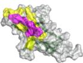
Lipustobart/PD-1
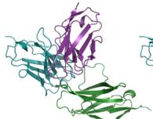
ipTM=0.861

Cemiplimab/PD-1

ipTM=0.852

Camrelizumab/PD-1
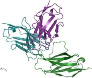
ipTM=0.840

Penpulimab/PD-1

ipTM=0.829

Ezabenlimab/PD-1

e
SC2RBD Binding Prediction
f
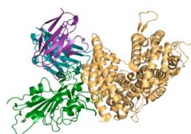
Spatial Analysis of Competitive Antibody with ACE2

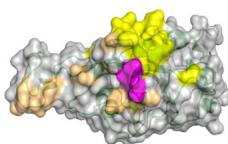

g
Retrospective study for tFold System design’s antibodies
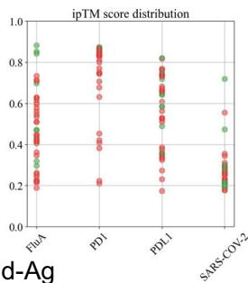
tFol

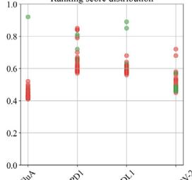
AlphaFold-3
Ranking score distribution
of our method in silico, we conducted virtual screening experiments on two target antigens: PD-1 from Thera-SAbDab37 and the SC2RBD from single-B repertoire sequencing dataset75. This evaluation aims to assess the performance of tFold-Ag in virtual screening, which means identifying binding antibodies from a pool of candidate antibody sequences.
As illustrated in Fig. 5a, tFold-Ag effectively distinguishes PD-1- binding antibodies from non-binding ones, achieving an AUC of 0.76 based on the computed confidence scores. Remarkably, within the top \(1 \%\) of the antibody ranking list determined by tFold-Ag, we observe an enrichment factor \(( \mathsf { E F } ^ { 1 \% } )\) of 7.41, indicating that two out of seven antibodies identified as high-confidence binders are positive samples,
Fig. 5 | Structure-guided virtual screening for binding antibodies with tFold-Ag. a ROC curve for PD-1 set in distinguishing between binding and non-binding antibodies. b Performance of virtual screening for identifying binding antibodies against PD-1 from a dataset of 745 antibodies, featuring 27 positive samples. Our method yielded two positive samples within the top \(1 \%\) of the ranking, resulting in an EF(1%) of 7.41. c Spatial analysis of binding antibodies (Lipustobart, ranked 1st by confidence predicted by tFold-Ag, blue for heavy chain, purple for light chain, and green for antigen chain) with PD-L1 (PDB ID: 4ZQK, orange for ligand and green for antigen chain). The antibody-antigen structure is superimposed with the antigenreceptor structure by applying the Kabsch algorithm to the shared antigen component in both complex structures. The competing antibodies exhibit spatial clashes (highlighted in red) and their antigenic epitopes overlap with the binding interface between the antigen and its ligand (shown in purple). d tFold-Ag predicted structures of PD-1 in complex with anti-PD-1 antibodies. The selected antibodies were the top 5 positive sample antibodies of our method, all with confidence
scores greater than 0.8. The ribbon models (top) and surface models (bottom) of PD-L1 are displayed in the same orientation, and the antibody heavy and light chains are colored blue and purple, respectively. The epitope on the surface of the PD-1 is colored yellow, while the shared regions of the five antibodies’ epitopes and the PD-L1 binding site are colored purple. e ROC curve for SARS-CoV-2 set in distinguishing between binding and non-binding antibodies. f Spatial analysis of a competitive antibody (ranked 4th with true competitive labels predicted by tFold-Ag with confidence, blue for heavy chain, purple for light chain, and green for antigen chain) with ACE2 (PDB ID: 6M0J, orange for receptor and green for antigen chain). The competing antibodies exhibit spatial clashes (highlighted in red) and their antigenic epitopes overlap with the binding interface between the antigen and its ligand (shown in purple). g ROC curves for distinguishing binding vs. non-binding antibodies using the ipTM score generated by tFold-Ag (Left) and ranking score generated by AlphaFold-3 (Right), evaluated on 40 antibodies designed by the tFold system. Distributions of their scores are also presented.
as confirmed in Fig. 5b. This strong correlation between tFold-Ag confidence score and the antigen-binding capability of antibodies underscores its utility in virtual screening. Furthermore, we assess the validity of our predicted complex structures of anti-PD1 antibodies sourced from Thera-SAbDab, all of which are either in clinical use or approved, with no experimental structures currently available. Although there are eight epitopes for anti-PD145 that exhibit blocking and agonist functions, these antibodies are confirmed to block the PD1-PDL1 interaction, reflecting their pharmacological role. Using tFold-Ag, we predicted the structure of Lipustobart, the top-ranked antibody, and confirmed the similarity of its binding site to PD-L1. Structural superimposition with the PD-1/PD-L1 complex (PDB ID: 4ZQK50) demonstrates its potential for competitive binding with PD-1, as illustrated in Fig. 5c. We present the top five positive sample antibodies ranked by our method (Fig. 5d), all of which have confidence scores greater than 0.8. While these antibodies bind to slightly different epitopes, they share overlapping epitopes and spatial proximity with PD-L1. This alignment with their functional capability to block PD-L1 indicates that tFold-Ag’s predictions accurately reflect their function.
To evaluate the virtual screening performance for the SC2RBD, we utilized antibodies from a single-B cell repertoire sequencing dataset75. This approach enables us to assess the model’s predictive accuracy on data distributions, confirming its generalizability. The normalized number of effective sequences (Neff) for the MSA of the SARS-CoV-2 RBD is 4.9, compared to 8.3 for PD-1, indicating fewer diverse homologous sequences for the SC2RBD, making the prediction more challenging. Additionally, the cutoff date for tFold-Ag’s training set is 31 December 2021, while most antibody structures capable of binding to the SC2RBD were released in 2022 or later, further challenging the model due to limited training samples. Despite these difficulties, tFold-Ag achieves an AUC of 0.70 (Fig. 5e) and an \(\mathsf { E F } ^ { 1 \% }\) of 2.35, indicating moderate success in discriminating binding from non-binding antibodies. Using the Kabsch algorithm, we superimpose a highconfidence predicted antibody-antigen structure with the RBD/ACE2 complex (PDB ID: 6M0J52), revealing overlapping epitopes and spatial clashes (Fig. 5f) indicative of competitive binding, which was experimentally validated. However, the relatively low confidence scores for the antibody-SC2RBD complex predictions complicate the assessment of the competitive potential based solely on structural data. While the predicted structures offer insights, their accuracy may be limited, which makes it challenging to definitively determine competitive binding based solely on these predictions. Further details of our analysis are provided in the Supplementary Information.
To further explore the correlation between confidence scores generated by structure prediction and binding specificity, we selected 40 antibodies designed by the tFold system. The antigens they specifically bind to serve as positive samples, and another 3 antigens as negative samples. We used tFold-Ag and AlphaFold-3 to predict the
structures of 160 antibody-antigen complexes, respectively, to determine whether the correct antigen could be selected based on confidence scores. This is a more challenging test set because these antibodies have identical FRs. The AUC curves and confidence score distributions are shown in Fig. 5g.
Overall, for PD-1 designs, the confidence scores of tFold-Ag and AlphaFold-3 showed strong correlation, with AUCs of 0.95 and 0.74, respectively. This may be attributed to the presence of PD-1 antibodies with FRs IGHV3-23/IGKV1-5 in SAbDab, enabling more accurate prediction of such antibody-antigen complexes by structural prediction algorithms. In contrast, the correlation was weaker for Flu A and PD-L1: tFold-Ag yielded AUCs of 0.63 and 0.65, while AlphaFold-3 yielded 0.61 and 0.68, respectively. For the more challenging SC2RBD, the confidence scores of tFold-Ag and AlphaFold-3 showed almost no correlation with binding specificity. Notably, most of the top-ranked antibodies by tFold-Ag were positive samples, which is partially related to the pipeline of the tFold system but also indicates that the confidence scores of tFold-Ag can, to some extent, distinguish the specific binding between antibodies and antigens. The confidence scores of AlphaFold-3 are somewhat informative for Flu A and PD-L1, but perform poorly for other targets.
In summary, the evaluation results confirm tFold-Ag’s effectiveness in identifying binding antibodies by accurately reconstructing antibody-antigen complexes. Notably, while MSAs of antigens are essential, MSAs of antibodies are not required, providing a significant speed advantage in high-throughput virtual screening (Supplementary Fig. 8). This structure-guided screening approach, distinct from sequence-based methods, can identify binding antibodies to antigens not present in the training set. Furthermore, it can be integrated with energy-based methods12,76 to enhance the efficiency of the virtual screening process. This broadens its applicability to single B-cell receptor repertoire sequencing data and supports de novo antibody design in complex pharmaceutical contexts.
Joint antibody structure prediction and sequence recovery
Beyond structure prediction, the tFold system implements sequence recovery as a critical component in de novo antibody design. To enable joint antibody structure prediction and sequence recovery, we extended tFold-Ag into a multitask framework integrating two modules: a structure prediction head for antibody-antigen complex modeling and a sequence recovery head for masked residue reconstruction (Fig. 6a). The workflow employs Evoformer-Single to iteratively optimize masked antibody features alongside antigen inputs. Masked regions are reconstructed through the sequence recovery head, with predicted sequences subsequently fed to the structure module for the joint prediction of antigen–antibody complex conformations and antibody sequences.
During training, dual-task optimization synchronizes structuresequence co-design. For structure prediction, established protocols28,29

a
Joint Antibody Structure Prediction and Sequence Recovery

b
Antibody CDR-H3 Recovery
c

Correlation between iplddt and AAR
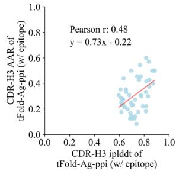

d
Structure and Sequence Co-design Prediction

Fig. 6 | Joint antibody structure prediction and sequence recovery with tFold-Ag. a Joint structure-sequence prediction workflow of tFold-Ag: masked antibody residues are encoded by ESM-PPI for feature extraction, followed by repr.-driven flexible docking. Compared to the original tFold-Ag, an additional sequence recovery head is included to predict the masked amino acids and output the confidence score (iplddt) of the masked amino acids. b Performance of antibody amino acid recovery (AAR) for CDR-H3 of tFold-Ag and other antibody design methods on SAbDab-22-Design-Ab \(( n = 5 0 )\) ) test set. c Correlation between iplddt
and AAR of CDR-H3 in SAbDab-22-Design-Ab \(\left( n = 5 0 \right)\) . (Left): tFold-Ag prediction nwithout any extra structure restraints, least-squares linear fit \(\mathbf { A A R } = 0 . 6 7 \times\) iplddt −0.13 (Pearson’s \(\pmb { r } = \mathbf { 0 . 4 1 } )\) ; (Right): tFold-Ag-ppi prediction with given epitope, leastsquares linear fit AA \(\mathsf { R } = 0 . 7 3 \times\) iplddt −0.22 (Pearson’s \(\begin{array} { r } { r = 0 . 4 8 ) } \end{array}\) ). d Comparison of rour predicted structures and CDR-H3 amino acid types for antibody targets 7URF (left) and 7W71 (right). The heavy chain is shown in blue, the light chain in purple, and the respective experimental structures in gray. Correctly predicted amino acids are highlighted in blue.
are adopted using experimental structures as supervision. For antibody design, strategic masking targets key functional regions (e.g., CDRs of heavy/light chains), with the original sequences providing recovery supervision and experimental structures guiding complex conformation prediction. This dual supervision enables the model to account for antigen-antibody interactions during generation, producing antibodies with native-like sequences and structurally plausible complexes. Notably, the framework supports the optional integration of interface information to enhance both structure prediction and antibody design. As demonstrated in the previous section, variants like tFold-Ag-ppi (utilizing epitope and paratope) exemplify this adaptable architecture.
To optimize tFold-Ag for both complex structure prediction and antibody design, we implemented a three-stage training process. The initial stage focuses solely on structure prediction and omits the sequencemasking process. In the subsequent fine-tuning stages with different parameters such as learning rate and sequence crop size, we introduce a random masking process for the CDRs of antibodies, applying a \(30 \%\) probability of masking an amino acid (with a \(70 \%\) probability of retaining its original form) to co-train the model for both tasks.
Our method employs a co-design approach that ensures the generated antibodies are suitable from both sequence and structural perspectives, unlike previous two-stage methods that typically focus
on either structure22 or sequence77. Furthermore, our approach supports various types of prior inputs, including epitopes and paratope, without requiring the structural information of the antigen complex. This contrasts with existing methods that depend on experimentally determined antibody-antigen complex structures78, antibody structures79, or antigen structures along with binding epitopes70,80. As a result, our method theoretically enables the modeling of conformational changes in antibodies and antigens before and after binding.
We evaluated the performance of tFold-Ag in CDRs recovery for both chains of the antibody through in silico evaluation. For this purpose, we curated two test sets, termed SAbDab-22-DesignAb (including 50 antibody-antigen pairs) and Cov-AbDab-DesignAb (77 antibodyantigen pairs), respectively. We assessed the generalization ability of tFold-Ag to generate binding antibodies for unseen antigens in the SAbDab-22-DesignAb set and antibodies for target antigens in the Cov-AbDab-DesignAb set. The performance of tFold-Ag to generate binding antibodies for unseen antigens is illustrated in Fig. 6b and Supplementary Table 4, where it is also compared with other existing methods that require prior knowledge. We employed the amino acid recovery (AAR) and contact amino acid recovery (CAAR) metrics for our in silico evaluation. It is important to note that a higher AAR or CAAR does not necessarily indicate better performance, while a sequence that diverges from the original does not automatically imply ineffective antibody design. However, these metrics are commonly used in various machine learning studies, thereby justifying their inclusion in our analysis.
We observed that tFold-Ag, without any prior information, achieves AARs of 0.302 and 0.267 for CDR-H3 in SAbDab-22-DesignAb and Cov-AbDab-DesignAb, respectively. These recovery rates are comparable to the leading method, dyMEAN, which requires prior epitope information. We then evaluated the impact of additional structural restraint features on tFold-Ag’s antibody CDRs recovery performance. As shown in Supplementary Table 4, incorporating these features significantly enhances CDRs recovery performance (tFold-Agppi vs. tFold-Ag). When epitope information is included, the CDR-H3 AAR for SAbDab-22-DesignAb improves to 0.317, surpassing dyMEAN \(( \mathsf { A A R } = 0 . 3 1 0 )\) , underscoring the importance of epitope information in CDR-H3 design. However, the CDR-H1 and CDR-H2 AARs for tFold-Ag are lower than those of dyMEAN70. This is attributed to both CDR-H1 and CDR-H2 being encoded by the V gene, in which a reasonable performance \(( \mathsf { A A R } = 0 . 7 2 6\) for CDR-H1 and 0.427 for CDR-H2) can be achieved using the sequence-based model ESM-PPI. When tFold-Ag incorporates antigen structure information for these regions, it often introduces interference, as CDR-H1 and CDR-H2 do not always bind to the antigen. Additionally, we observed that tFold-Ag generally has lower CAAR values. Besides designing paired antibodies, tFold-Ag is also suitable for nanobody design, with more in silico evaluation provided in supplementary information.
In Fig. 6c and Supplementary Fig 12, we investigate the correlation between the confidence score of structure prediction and the quality of antibody sequence recovery, as evaluated by AAR. Our in silico experiments indicate that while the confidence score provided by ipTM does not correlate with design quality, the residue-level confidence score of our designed region, termed iplddt, is associated with the quality of antibody sequence recovery. Higher iplddt scores typically result in antibodies that are more similar to positive sequences, allowing us to use iplddt as a metric for assessing the performance of CDR-H3 sequences designed by tFold-Ag. Moreover, we found that single-step recovery often results in a high frequency of the “YYY” (Tyrosine) motif, which is particularly significant in paratope contact sites, where it is the most abundant amino acid residue \(( 1 9 \% ) ^ { 8 1 }\) . However, this prevalence adversely affects the diversity of CDR-H3 sequences generated by the tFold system, leading to a lower average iplddt score. To address this challenge, we implement a step-by-step sequence generation approach within the tFold system, similar to
methodologies employed in previous studies82. In this approach, each step focuses on recovering the amino acid sequence type for a single position that is determined by the highest iplddt score, with the updated input being fed back into the model. Compared to the singlestep method, this step-by-step strategy significantly reduces the proportion of repetitive motifs and simultaneously improves the average iplddt score.
Figure 6d presents examples of the sequences and structures of the designed antibodies generated from tFold-Ag and tFold-Ag-ppi (with epitope). As a key component of the tFold system, tFold-Ag is capable of producing innovative antibody sequences with multiple amino acid modifications in an end-to-end manner, while still preserving a high structural similarity to their naturally occurring counterparts.
Discussion
Our wet-lab validation across multiple targets confirms the feasibility of the tFold system for de novo computational antibody design targeting specific epitopes. However, we acknowledge that the current success rate of generating functional antibody binders remains modest, which stems from the inherent challenge of de novo designantibodies primarily rely on flexible CDRs for antigen binding, a scenario that is more complex than that of designing protein binders based on rigid secondary structure elements. The tFold system currently yields binders at an approximate success rate ranging from 1.5 to \(4 . 4 \%\) . A similarly low success rate has also been observed in the recent RFAntibody22. This shared low success rate across specialized antibody design platforms underscores the necessity of coupling computational designs with experimental binder identification pipelines, such as phage or yeast display libraries, to effectively filter candidates and advance functional binders.
A key limitation of the tFold system lies in its insufficient discriminative power to reliably distinguish true binders from nonbinders. Although tFold-Ag’s confidence scores provide a useful ranking metric, their sensitivity diminishes for candidates sharing identical FRs. Furthermore, these confidence scores show weak sensitivity to mutations in either antibodies or antigens, limiting their utility in assessing affinity changes or immune escape. Structural inaccuracies in nanobody–antigen complex predictions further contribute to lower success rates for nanobody design compared to conventional antibodies. Additionally, the system is currently restricted to designing antibodies against monomeric antigens and cannot target complex antigens such as peptide-MHC. Challenges also arise when targeting epitopes absent in training datasets. For example, attempts to design an anti–PD-1 agonist for the MPER region of PD-145 consistently yielded low-confidence predictions, likely due to the absence of this structural motif in SAbDAb. The system’s capability to pioneer antibodies for targets remains an open question requiring further exploration.
Following the completion of this study, the release of AlphaFold-29 \(3 ^ { 2 9 }\) marked a significant advancement in antibody–antigen complex prediction accuracy83. Comparative analyses between tFold-Ag and AlphaFold-3 confirm AlphaFold-3’s superior performance in predicting antibody-antigen interactions, as well as confidence score correlation with structural precision. Recent studies22 have demonstrated that integrating AlphaFold-3 filtering into computational workflows can substantially improve experimental success rates. Consequently, incorporating AlphaFold-3 or AlphaFold-3-similar model59,84,85 into the tFold system workflow may enhance virtual screening efficiency and increase the likelihood of identifying high-affinity therapeutic candidates.
Despite these limitations, the tFold system demonstrates transformative potential. Successfully designed antibodies exhibit nanomolar to picomolar affinities, epitope-specific binding, and functional ligand blockade, which are key milestones in therapeutic
development. Critically, tFold-generated antibodies offer advantages over traditional methods. Each design is guided by explicit structural hypotheses, enabling precise targeting of predefined epitopes. This capability is unattainable with antibodies derived from animal immunization, which often exhibit promiscuous binding.
The tFold system synergizes powerfully with experimental highthroughput screening. Phage display libraries, for instance, can efficiently identify high-affinity binders from computationally generated designs. Combinatorial library screening, which involves mixing heavy and light chains from designs with similar binding modes, enhances the identification of epitope-specific antibodies while compensating for design inaccuracies. This hybrid computational-experimental pipeline achieves notable speed and cost efficiency compared to conventional approaches such as immunization or random library screening.
In conclusion, the tFold system transcends its original role as a structure prediction tool, emerging as a versatile platform for antibody innovation. By systematically mapping antibody-antigen interaction landscapes, it enables rational exploration of sequence-structurefunction relationships. Future advancements in prediction accuracy, combined with virtual screening and iterative optimization protocols, could position the tFold system as an indispensable engine for accelerating discoveries in structural bioinformatics and therapeutic antibody engineering. Bridging the gap between proof-of-concept designs and pharmaceutical-grade candidates will require sustained refinement of both computational algorithms and experimental validation frameworks.
Methods
This method section provides technical details and extended analyses to support the results presented in the previous sections. The exposition is structured as follows:
- Wet-lab experimental methods: experimental protocols for the binder identification pipeline and binder characterization workflow.
- Details of the tFold system workflow: pre-wet-lab components of the tFold system workflow, including inputs, the application of a generator and filters, and the overall process.
- Datasets and evaluation criteria: dataset composition and detailed specifications of evaluation metrics.
Additional algorithmic details, including notations and conventions, algorithmic details, application details and supplementary results, are provided in the Supplementary information.
Antigen and epitope for de novo design
Influenza A hemagglutinin protein (Flu A), a homotrimeric surface glycoprotein, mediates viral entry through receptor binding and membrane fusion. We selected the HA1 subunit of H3N2 (A/Aichi/2/ 1968) as our target antigen, focusing on the 220-loop (residues 219–229) at the trimer interface. Our antibody design aims to mimic the FluA-20 epitope53 in the non-receptor binding site region to achieve broad protection against diverse Flu A subtypes. (Sino Biological, REF:11707-V08H).
Programmed cell death 1 (PD-1), a type I transmembrane glycoprotein in the CD28/CTLA-4 family, negatively regulates T-cell activation by recruiting SHP-2 upon binding to its ligands PD-L1 or PD-L2. We targeted the PD-1/PD-L1 interaction interface to block their binding and prevent immune evasion by tumors. (Sino Biological, REF:10377-H08H).
Programmed death-ligand 1 (PD-L1), a cell-surface receptor that interacts with PD-1, plays a key role in immune regulation and tumor immune escape. Our antibody design focused on the PD-L1/PD-1 binding interface to disrupt this immunosuppressive interaction. (Sino Biological, REF:10084-H08H).
SARS-CoV-2 spike protein receptor-binding domain (SC2RBD), a protein domain required for COVID-19 infection, mediates viral entry by specifically binding to the human angiotensin-converting enzyme 2 (ACE2) receptor. We focused on the wild-type SC2RBD, targeting its RBD/ACE2 interaction interface to block viral attachment and prevent host cell infection. (Sino Biological, REF:40592-V08H).
De novo designed phage display library construction
The oligonucleotides encoding the designed antibodies were synthesized by Twist Bioscience as multiplexed gene fragments and 300- nucleotide (nt) single-stranded oligo pools, which included 10,000 distinct variable heavy (VH) chain fragments and 10,000 distinct variable light (VL) chain fragment. The libraries for different targets are different. Using these synthetic antibody gene pools as templates, VH and VL chain fragments were amplified via PCR. The VH and VL fragments were then assembled into single-chain variable fragment (scFv)-encoding sequences using splicing by overlap extension PCR (SOE-PCR), where the VL fragment is followed by the VH fragment and connected via a flexible linker with the sequence: SSGGGGSGGGGGGSSRSS. The resulting scFv sequences were digested with an in-house prepared SfiI restriction enzyme and ligated into the phage display vector pComb3x. The ligated products were electroporated into X-Blue competent cells to construct the phage-displayed scFv antibody library. The library size was calculated to ensure sufficient diversity for downstream screening. Agarose gel electrophoresis confirmed that the constructed phage antibody library exhibited a library size consistent with the project requirements, thereby validating its suitability for subsequent screening processes.
Binder identification with phage display and Sanger sequencing The primary antibody library was infected with helper phage to generate the initial phage-displayed antibody library. Enrichment of antigen-specific binders was performed through two distinct strategies: solid-phase panning and liquid-phase panning. For solid-phase panning, antigens were immobilized on ELISA plates. The presubtracted phage library (pre-adsorbed against His-tagged protein to minimize nonspecific binding) was added to the wells, followed by washing to remove unbound phages. Antigen-bound phages were eluted using acidic glycine buffer \(\left( \mathsf { p H } \ 2 . 2 \right)\) and neutralized immediately. In liquid-phase panning, biotinylated antigens were captured on streptavidin-coated magnetic beads. The pre-subtracted phage library was incubated with the antigen-bead complexes, and unbound phages were removed via magnetic separation and washing. Bound phages were eluted under the same conditions as in solid-phase panning.
Enriched phage pools from each round were amplified in , E. coliprecipitated, and subjected to subsequent rounds of panning (2–4 rounds total). To mitigate cross-reactivity with His-tagged proteins, a subtractive pre-adsorption step was systematically incorporated before each panning cycle: the phage library was pre-incubated with His-tagged protein-coated plates or beads to deplete nonspecific binders.
Following the final enrichment round, individual phage clones were picked and expressed for screening. Antigen-binding activity was evaluated by ELISA, with His-tagged protein serving as a negative control to exclude clones exhibiting cross-reactivity. A total of 1000 monoclonal phages testing positive in ELISA (defined by \(0 { \Delta } 4 5 0 \geq 3 \times\) negative control) were selected for further characterization. These ELISA-positive clones were categorized by their target antigens (FluA, PD-1, PD-L1, and SC2RBD) and subjected to Sanger sequencing to assess sequence diversity.
Sequencing revealed distinct scFv sequences across antigens: 346 unique scFv sequences for Flu A, 591 for PD-1, 344 for PD-L1, and 540 for SC2RBD (summing to more than 1000 due to overlapping clone analysis across antigens). To further evaluate structural diversity, we analyzed the heavy chain sequences within these scFvs (with heavy
chains, especially CDR-H3, playing a key role in epitope recognition), identifying 281 unique heavy chains for Flu A, 154 for PD-1, 247 for PD-L1, and 442 for SC2RBD.
High-affinity clones demonstrating specific binding to the target antigen (but not to His-tag) were prioritized for downstream analysis. Ten antibodies were ultimately selected for further analysis from these unique scFv sequences, with preference given to clones showing strong ELISA signals and diverse heavy chain profiles to ensure representativeness.
Antibody construction and HEK293 transient expression
The variable heavy (VH) and light (VL) chain fragments of scFv antibodies were amplified by PCR and purified using a membrane-binding buffer system. Purified fragments were ligated into the cloning vector with ligase at \(5 0 ^ { \circ } \mathrm { C }\) for 20 min, followed by transformation into competent cells via ice incubation (30 min) and heat shock (90 s). Colonies were expanded and sequenced to confirm scFv sequences. Validated heavy/light chain plasmid pairs with the Fc region were co-transfected into HEK293 cells using transfection reagent TF2. Transfected cells were cultured in serum-free CD medium supplemented with feed medium on days 1, 3, and 5 post-transfection, under conditions of 37 °C, 5% CO2, and 175 rpm shaking.
Antibody purification and quality analysis
Cell supernatants were clarified by centrifugation \(( 4 0 0 0 \times g ,\) 30 min) and filtered through \(0 . 4 5 \mu \mathrm { m }\) g membranes. Clarified samples were loaded onto protein A columns pre-equilibrated with AC Binding buffer. After washing (5–10 column volumes, CV), antibodies were eluted with AC Elution buffer, neutralized with Tris \(\left( \mathsf { p H 8 } . 0 \right)\) , and dialyzed. Columns were regenerated with CIP buffer (>5 CV), rinsed to neutrality, and stored in \(2 5 \%\) ethanol.
Antibody concentration was determined by measuring absorbance at \(2 8 0 \mathsf { n m }\) (baseline stability: \(_ { \pm 0 . 0 1 5 ) }\) ) and normalized using an IgG extinction coefficient (1.414). Purity was assessed via SDS-PAGE: samples \(( 5 \mu \mathrm { g } )\) were denatured in \(4 \times\) loading buffer, electrophoresed at \(\bf { 1 0 0 V }\) (stacking gel) and 140 V (separation gel), and stained with Coomassie blue.
ELISA for antibody binding analysis
Microtiter plates were coated overnight at \(4 ^ { \circ } \mathrm { C }\) with antigen protein (0.1 or \(1 \mu \mathrm { g } / \mathrm { m L }\) , 100 μL/well). After removing the coating solution, plates were blocked with \(2 \%\) BSA \(( 3 0 0 \mu \mathrm { L } / \ w \mathrm { e l l } )\) for 1 h at room temperature. Unbound blockers were removed by washing twice with 300 μL/well of wash buffer, followed by thorough drying. Test antibodies (1 μg/mL, 100 μL/well) were added and incubated for 2 h at room temperature. Plates were washed three times with wash buffer, and horseradish peroxidase (HRP)-conjugated goat anti-human IgG \(\left( \mathsf { H } + \mathsf { L } \right)\) secondary antibody (100 μL/well at optimal dilution) was added for 1 h. After repeating the wash step, chromogenic substrates A and B were mixed (1:1 ratio) and added to each well \(( 2 0 0 \mu \mathrm { L } / \mathrm { w e l l } )\) . The reaction proceeded for 20 min at room temperature in the dark before termination with \(5 0 \mu \mathrm { l }\) /well stop solution. Absorbance at \(4 5 0 \mathsf { n m }\) (OD450) was measured immediately.
Affinity assays using SPR
Binding affinities were assessed on a Biacore 8 K instrument (Cytiva) with S-series Protein A or NTA chips (Cytiva). Running buffers included \(1 { \times } \mathsf { H B S { – } E P { + } }\) (Flu A, PD-1, SC2RBD) or \(2 { \times } \mathrm { H B S { - } P { + } }\) (PD-L1).
Flu A: antibodies were captured on Protein A chips at \(1 0 \mu \mathrm { L } / \mathrm { m i n }\) with varying injection times (12–24 s) and concentrations \(\left( 1 { - } 6 \mu \mathrm { g / m L } \right)\) . Antigen (200–400 nM, two-fold serial dilution) was analyzed at \(3 0 \mu \mathrm { L } /\) min (60 s association, 60–300 s dissociation depending on antibody).
PD-1: antibodies \(( 4 \mu \mathrm { g } / \mathrm { m L } )\) were captured for 30 s. Antigen (75–400 nM, 2-fold serial dilution) was flowed at \(3 0 \mu \mathrm { L } / \mathrm { m i n }\) (60 s association, 60–300 s dissociation).
PD-L1: antigen \(( 0 . 5 { - } 0 . 7 5 \mu \mathrm { g / m L } )\) ) was immobilized on NTA chips (15 s injection). Antibodies (6.25–50 nM, 2-fold serial dilution) were analyzed at \(3 0 \mu \mathrm { L } / \mathrm { m i n }\) (60 s association, 60–180 s dissociation).
SC2RBD: antibodies \(( 4 \mu \mathrm { g } / \mathrm { m L } )\) were captured for 20 s. Antigen \(( 5 0 - 4 0 0 \mathsf { n M }\) , two-fold serial dilution) was tested at \(3 0 \mu \mathrm { L } / \mathrm { m i n }\) (60 s association, 120 s dissociation).
Chips were regenerated with \(\bf { 1 0 m M }\) Glycine-HCl (pH 1.5, Protein A) or \(3 5 0 \mathrm { m M }\) EDTA (NTA) at \(3 0 \mu \mathrm { L / m i n }\) for 30 s. Binding kinetics were analyzed using \({ \ge } 5\) analyte concentrations.
Competition assays using SPR
Competition assays were conducted on a Biacore 8 K instrument (Cytiva) with NTA chips (Cytiva) between our designed antibodies and ligands, using \(2 { \times } \mathsf { H B S } \cdot \mathsf { P } +\) as the running buffer.
PD-1: antigen \(( 0 . 5 \mu \mathrm { g } / \mathrm { m L } )\) was immobilized on the NTA chips for 15 s. Two analyte solutions were prepared and injected at a flow rate of \(3 0 \mu \mathrm { L } / \mathrm { m i n } .\) . Solution A contained PD-L1 (250 nM) and buffer. Solution B had PD-L1, PD-1 antibodies (50 nM), and buffer. The injection contact time was 90 s, followed by a 300 s dissociation period. The experiments were carried out in four modes: (1) PD-1, PD-L1, and PD-1 antibody; (2) PD-1, buffer, and PD-1 antibody; (3) PD-1, PD-L1, and additional PD-L1; (4) PD-1, buffer, and buffer. After each cycle, the chips were regenerated with \(3 5 0 \mathrm { m M }\) EDTA at \(3 0 \mu \mathrm { L } / \mathrm { m i n }\) for 60 s.
PD-L1: antigen \(( 1 . 0 \mu \mathrm { g } / \mathrm { m L } )\) was immobilized on the NTA chips for 15 s. Two analyte solutions were injected at \(3 0 \mu \mathrm { L / m i n }\) . Solution A contained PD-1 (250 nM) and buffer. Solution B had PD-1, PD-L1 antibodies (50 nM), and buffer. The injection contact time was 90 s, followed by a 300 s dissociation period. The experiments were conducted in four modes: (1) PD-L1, PD-1, and PD-L1 antibody; (2) PD-L1, buffer, and PD-L1 antibody; (3) PD-L1, PD-1, and additional PD-1; (4) PD-L1, buffer, and buffer. After each cycle, the chips were regenerated with \(3 5 0 \mathrm { m M }\) EDTA at \(3 0 \mu \mathrm { L } / \mathrm { m i n }\) for 60 s.
SC2RBD: antigen \(( 0 . 5 \mu \mathrm { g } / \mathrm { m L } )\) ) was immobilized on the NTA chips for 15 s. Solution A included ACE2 protein \(( 5 0 0 \mathsf { n M } )\) and buffer. Solution B contained ACE2 protein, SC2RBD antibodies \(( 3 3 . 3 \mathsf { n M } )\) ), and buffer. The injection was at \(3 0 \mu \mathrm { L / m i n }\) for 90 s, followed by 300 s of dissociation. The four experimental modes were: (1) SC2RBD, ACE2, and SC2RBD antibody; (2) SC2RBD, buffer, and SC2RBD antibody; (3) SC2RBD, ACE2, and additional ACE2; (4) SC2RBD, buffer, and buffer. Chip regeneration was done with \(3 5 0 \mathrm { m M }\) EDTA at \(3 0 \mu \mathrm { L / m i n }\) for 60 s.
Flu A: antigen (1 μg/mL, pH 4.0) was immobilized on the NTA chips to a level of 350 RU. Solution A consisted of FluA-20 \(( 2 0 0 \mathsf { n M } )\) and buffer. Solution B had FluA-20, Flu A antibodies \(( 2 0 0 \mathsf { n M } )\) , and buffer. The injection was at \(3 0 \mu \mathrm { L / m i n }\) for 90 s, followed by 300 s of dissociation. The four experimental modes were: (1) Flu A, FluA-20, and Flu A antibody; (2) Flu A, buffer, and Flu A antibody; (3) Flu A, FluA-20, and additional FluA-20; (4) Flu A, buffer, and buffer. The chips were regenerated using \(1 0 \mathrm { m M }\) Glycine-HCl (pH 2.0) at \(3 0 \mu \mathrm { L / m i n }\) for 30 s.
Details of candidate antibodies selection with tFold system
Inputs for the tFold system. The input for the tFold system includes the antigen MSA, antigen epitope, and antibody template. We utilized the IGHV3-23/IGKV1-5 and IGHJ4/IGKJ1 antibody templates, which are humanized to avoid the need for further humanization steps. The lengths of the antibody CDRs are manually specified: CDR-1 and CDR-2 are determined by the V gene and have fixed lengths, while the length of CDR-3 is variable. To determine the CDR-3 lengths, we analyzed antibodies with the same V gene in the OAS database and selected the 36 most frequent combinations (12 for CDR-H3 and 3 for CDR-L3). The sequence and length composition of the antibody templates are detailed in Table 1.
Generator and filter. This section delineates the details of tFold system workflow we used before wet-lab experimental. It integrates multi-
phase generation and hierarchical filtering strategies to produce de novo antibodies target specific antigen epitope.
- Data expansion and model fine-tuning. We expanded the training dataset by fine-tuning our generator (tFold-Ag-ppi) using epitopespecific antibody data from the SAbDab database prior to 2024. This approach excluded paratope information to enhance the model’s generalizability, particularly improving structural prediction performance for SCRBD antibodies.
- Candidate antibody generation. For each target, tFold-Ag-ppi generated approximately 1 million distinct candidate antibodies using 1000 random seeds and 36 FR inputs (Table 1). During generation, sequence positions were iteratively selected based on iplddt scores, while temperature sampling was applied to increase diversity in CDR sequences (especially CDR1 and CDR2).
- Structure prediction and initial filtering. Antibody-antigen complex structures were predicted using tFold-Ag and AlphaFold-Multimer. The top \(20 \%\) of candidates were selected based on confidence score distributions \(( { \geq } 0 . 7 )\) . These complexes were structurally aligned with antigen templates, and candidates exhibiting steric clashes between the antibody and the receptor (or ligand) were retained, while the others were filtered out. This filtering strategy was designed to enrich for antibodies capable of blocking the binding of the receptor to the antigen, a critical functional requirement for therapeutic candidates.
- Sequence novelty filtering. Candidates with excessive similarity to known positive antibodies were removed using edit distance thresholds: dist-CDRH \({ \geq } 4\) , dist-CDRL \({ \geq } 4\) , dist-CDRH3 \({ \geq } 3 _ { i }\) , dist-CDRL3 \(^ { \ge 3 }\) . For PD1 targets, the CDR-H3 threshold was relaxed to \(^ { \ge 2 }\) .
- Unnatural motif filtering. Artificial repetitive motifs with occurrence frequencies below \(0 . 0 1 \%\) in OAS CDR sequences were systematically excluded. Prohibited patterns included “EEEEE”, “EEGEE”, “GGGGG”, “YYYYY”, and similar low-frequency sequences.
- Specificity scoring and sampling. An upgraded in-house antibodyantigen specificity prediction algorithm (derived from A2binder18) scored all antibody-antigen pairs. The top 2000 scoring sequences were directly selected, while the remaining candidates underwent weighted random sampling (based on specificity scores) to complete a total of 10,000 pairs per target.
- Final output: this workflow generated 10,000 paired heavy and light chain antibodies per target, optimized for structural stability, diversity, and antigen specificity.
Dataset and evaluation criteria
Datasets for antibody structures prediction. We constructed the training, validation, and test sets from the SAbDab database23 following the widely adopted temporally separated protocol29,58. Specifically, we curated all experimentally determined antibody structures released before 31 December 2021 to form the training set. This dataset comprises 8264 antibody complexes containing both heavy and light chains, 1693 antibody samples with only heavy chain information, and 376 antibody samples with only light chain information. We conducted meticulous data cleaning to remove structures with sequencestructure mismatches, non-standard amino acids, and incorrect heavy-light chain pairings.
During training preparation, we clustered the samples using CD-\({ \mathsf { H i t } } ^ { 8 6 }\) based on sequence similarity. Antibodies sharing \(5 9 5 \%\) sequence identity were grouped into the same cluster, yielding 2873 distinct clusters. For each training epoch, we randomly selected one representative sample from each cluster to assemble epoch-specific training data. The validation set contains antibody structures released between 1 January 2022 and 30 June 2022, used for hyper-parameter tuning and model selection. We removed validation samples exhibiting \(5 9 5 \%\)
sequence identity with training set counterparts to ensure independence. For evaluation, we established two non-redundant test subsets from structures released between 1 July 2022 and 31 December 2022: SAbDab-22H2-Ab (169 antibodies) and SAbDab-22H2-Nano (73 nanobodies), both maintaining \(- 9 9 \%\) intra-set sequence identity. To rigorously assess mutation sensitivity, we further excluded test samples showing \(100 \%\) sequence identity with training data. The comprehensive data curation pipeline ensured removal of problematic structures at all stages.
Datasets for antibody–antigen complex prediction. Following a similar protocol, we constructed training, validation, and test sets for antibody-antigen complex structures using the SAbDab23. The training set includes 4834 experimentally determined antibody-antigen complexes and 1319 nanobody–antigen complexes (encompassing singledomain antibody-antigen instances) released before 31 December 2021. During training preparation, samples were clustered by antigen sequence similarity through CD-Hit86, grouping complexes with \(5 9 5 \%\) antigen sequence identity into shared clusters. This process yielded 2459 distinct antigen clusters. For each training epoch, one representative sample was randomly selected per cluster to form epochspecific training data.
The validation set contains antibody-antigen and nanobody–antigen complexes released between 1 January 2022 and 30 June 2022, consisting of 99 antibody–antigen and 40 nanobody–antigen complexes. The test set comprises 99 antibody–antigen and 41 nanobody–antigen complexes released from 1 July 2022 to 31 December 2022, organized into two non-redundant benchmarks: SAbDab-22H2-AbAg (antibody–antigen) and SAbDab-22H2-NanoAg (nanobody–antigen), both maintaining \(- 9 5 \%\) intra-set sequence identity. To ensure fair benchmarking against existing methods like AlphaFold-Multimer, all test set structures were excluded during the training phase of all evaluated models. Additional test set pre-processing involved: (1) Removing samples sharing \(5 9 5 \%\) sequence identity with training set antigens; (2) Excluding antibody/ nanobody–antigen complexes lacking interfacial contacts; (3) Eliminating complexes with antigens exceeding 600 residues in length; (4) Removing samples with over \(50 \%\) missing residues in the antibody and nanobody structure. Consistent with our data curation pipeline, we rigorously applied quality filters to remove mismatched sequences, atypical amino acids, and erroneous chain configurations across all datasets. This protocol ensures temporal separation, structural integrity, and low redundancy for robust evaluation of generalization capabilities.
For each antigen chain in SAbDab, we produced its MSA by executing MMseqs2 following the default ColabFold pipeline. This was performed on the UniRef3087 library of March 2021, and the colabfold_envdb88 as of August, 2021.
Datasets for virtual screening of binding antibodies. To assess tFold-Ag’s efficacy in high-throughput binding antibody screening, we established two antigen-specific test sets: one targeting PD-1 and the other focusing on the wild-type SC2RBD.
This PD-1 set evaluates tFold-Ag’s ability to discriminate therapeutic anti-PD-1 antibodies from non-targeted antibodies. It comprises:
• 27 anti-PD-1 therapeutic antibodies curated from Thera-SAbDab37 (WHO-listed therapeutics with publicly available sequences).
• 718 paired heavy-light chain antibodies from healthy donors via \({ \mathsf { O A S } } ^ { 3 3 }\) , originally sampled during human rhinovirus infection studies89.
To prevent evaluation bias, we excluded nine therapeutic antibodies with existing experimental structures that might have been used in model training. The final benchmark contains 745 sequences,
requiring tFold-Ag to identify the 27 therapeutics using sequence data alone.
Simulating real-world drug discovery, this SC2RBD set leverages single-B cell repertoire sequencing data from SARS-CoV-2 spikeimmunized mice75 via OAS33:
• Initial pool: 11,388 paired heavy-light chain antibodies.
• After quality control: removal of 125 antibodies with incomplete VH/VL domains.
• Post-deduplication: 1595 unique antibodies with distinct VH/VL sequences, none having structural entries in SAbDab.
Functional annotations include:
• 85 RBD binders and 72 ACE2 blockers identified through ELISA and biolayer interferometry (BLI).
• Clonal relationships to characterized antibodies confirmed via germline gene identifiers and CDR3 sequence alignment.
tFold-Ag was tasked with distinguishing RBD binders from the 1595- sequence pool using only sequence inputs. Given the imbalance in this dataset (with non-binders vastly outnumbering binders), our evaluation incorporates not only AUC-ROC but also enrichment factors to robustly assess performance, ensuring a comprehensive quantification of its ability to prioritize true binders amid class imbalance.
Datasets for CDRs recovery. To comprehensively evaluate our model’s generalizability across diverse antibodies and antigens, we established two specialized test sets: one for antigen generalization and the other for antibody generalization.
The first benchmark, SAbDab-22-DesignAb, was curated from SAbDab by selecting antigen sequences clustered at 70% sequence identity. It contains antibody-antigen complexes released between 1 January 2022 and 31 December 2022. We excluded complexes where antigens shared \(> 70\%\) sequence identity with training set antigens. We further filtered out structures with experimental resolutions \(> 2.5 \text{ Å}\) to maintain structural reliability. For design relevance, we retained only complexes where CDR-H3 regions requiring design made antigen contacts (interatomic distance \(< 10 \text{ Å}\)). This yielded 50 high-quality antibody-antigen structures. Leveraging their experimental structures, we extracted critical input features including PPI interfaces, antigen epitopes, and contact details. This benchmark evaluates CDRs recovery performance under diverse antigen contexts with experimentally validated inputs.
The second benchmark, Cov-AbDab-DesignAb, was derived from Cov-AbDab39, containing coronavirus-binding antibodies. We removed antibodies with \(100 \%\) sequence identity to training set antigens and clustered antibody sequences at \(70 \%\) identity, resulting in 77 nonredundant antibody–antigen pairs. Notably, Cov-AbDab focuses on coronavirus-targeting antibodies, leading to antigen sequence homogeneity. This cluster-based curation enables systematic assessment of antibody framework generalization. As most Cov-AbDab entries lack experimental structures, we employed AlphaFold2 to predict antigen structures for methods requiring structural inputs.
We excluded the widely used RAbD14 benchmark, as its constituent antibody-antigen complexes overlap with our training data. While our method extends to nanobody design, the absence of comparable baselines prompted us to create SAbDab-22-DesignNano (detailed in the Supplementary Information) for internal validation. This benchmark follows analogous curation principles to SAbDab-22- DesignAb, with results presented in Supplementary Information to maintain focus on antibody CDRs recovery evaluation. Consistent with our data preprocessing pipeline, all datasets underwent rigorous filtering to remove sequence-structure mismatches, noncanonical residues, and erroneous chain configurations. The temporal separation between training (pre-2022) and evaluation (2022 releases) data ensures unbiased assessment of generalization capabilities.
Evaluation criteria. For antibody structure prediction, we present the backbone root-mean-square deviation (RMSD) for various FRs and CDRs. We use Chothia90, a structure-based numbering scheme for antibody variable regions. Additionally, we compare \(\mathrm { O C D } ^ { 6 2 }\) and DockQ91 score to verify how well the relative position between heavy and light chains is estimated.
Reporting summary
Further information on research design is available in the Nature Portfolio Reporting Summary linked to this article.
Data availability
All input data are freely available from public sources. In this study, the public data presented include: PDB entries: 4ZQK, 6M0J, 6OCB, 4FP8, 7OX3, 7RPT, 7WD1, 7OCJ, 7WSL, 7SAI, 8DS5, 7URF, and 7W71. The methods compared in this study include:AlphaFold-3 [https:// alphafoldserver.com], AlphaFold-Multimer [https://github.com/ google-deepmind/alphafold], Chai-1 [https://github.com/ chaidiscovery/chai-lab], EquiFold [https://github.com/Genentech/ equifold], Uni-Fold_MuSSe [https://github.com/dptech-corp/Uni-Fold], ESMFold [https://github.com/facebookresearch/esm], Omega-Fold [https://github.com/HeliXonProtein/OmegaFold], HelixFold-Single [https://github.com/EricwanAR/HelixFold-single], IgFold [https://github.com/Graylab/IgFold], DeepAb [https://github.com/ RosettaCommons/DeepAb], ImmuneBuilder [https://github.com/ oxpig/ImmuneBuilder], ZDock [https://github.com/brunoV/zdock], ClusPro [https://cluspro.org/help.php], HDock [https://github.com/ SidSin0809/hdock_batch], and DyMEAN [https://github.com/ THUNLP-MT/dyMEAN], ColabDock [https://github.com/JeffSHF/ ColabDock].
Code availability
The source code, weights and inference scripts for the tFold models, as well as the test set used in this paper are available on github [https:// github.com/TencentAI4S/tfold]. We also offer a web service for antibody and antigen–antibody complex structure prediction, which is available at https://drug.ai.tencent.com/en [https://drug.ai.tencent. com/en].
References
Edelman, G. M. Antibody structure and molecular immunology. Science 180, 830–840 (1973).
Lyu, X. et al. The global landscape of approved antibody therapies. Antib. Ther. 5, 233–257 (2022).
Laustsen, A. H., Greiff, V., Karatt-Vellatt, A., Muyldermans, S. & Jenkins, T. P. Animal immunization, in vitro display technologies, and machine learning for antibody discovery. Trends Biotechnol. 39, 1263–1273 (2021).
Wilson, P. C. & Andrews, S. F. Tools to therapeutically harness the human antibody response. Nat. Rev. Immunol. 12, 709–719 (2012).
DeKosky, B. J. et al. High-throughput sequencing of the paired human immunoglobulin heavy and light chain repertoire. Nat. Biotechnol. 31, 166–169 (2013).
He, X.-H. et al. AI-driven antibody design with generative diffusion models: current insights and future directions. Acta Pharmacol. Sin. 46, 565–574 (2025).
Bielska, W. et al. Applying computational protein design to therapeutic antibody discovery - current state and perspectives. Front. Immunol. 16, 1571371 (2025).
Liu, X. et al. Computational design of an epitope-specific Keap1 binding antibody using hotspot residues grafting and CDR loop swapping. Sci. Rep. 7, 41306 (2017).
Sormanni, P., Aprile, F. A. & Vendruscolo, M. Rational design of antibodies targeting specific epitopes within intrinsically disordered proteins. Proc. Natl. Acad. Sci. USA 112, 9902–9907 (2015).
Lapidoth, G. D. et al. AbDesign: an algorithm for combinatorial backbone design guided by natural conformations and sequences. Proteins 83, 1385–1406 (2015).
Aguilar Rangel, M. et al. Fragment-based computational design of antibodies targeting structured epitopes. Sci. Adv. 8, eabp9540 (2022).
Schymkowitz, J. et al. The FoldX web server: an online force field. Nucleic Acids Res. 33, W382–W388 (2005).
Leaver-Fay, A. et al. ROSETTA3: an object-oriented software suite for the simulation and design of macromolecules. Methods Enzymol. 487, 545–574 (2011).
Adolf-Bryfogle, J. et al. RosettaAntibodyDesign (RAbD): a general framework for computational antibody design. PLoS Comput. Biol. 14, e1006112 (2018).
Shanehsazzadeh, A. et al. IgDesign: in vitro validated antibody design against multiple therapeutic antigens using inverse folding. Preprint at https://doi.org/10.1101/2023.12.08.570889 (2023).
Høie, M. H. et al. AntiFold: improved structure-based antibody design using inverse folding. Bioinform. Adv. 5, vbae202 (2025).
Mahajan, S. P., Ruffolo, J. A., Frick, R. & Gray, J. J. Hallucinating structure-conditioned antibody libraries for target-specific binders. Front. Immunol. 13, 999034 (2022).
He, H. et al. De novo generation of SARS-CoV-2 antibody CDRH3 with a pre-trained generative large language model. Nat. Commun. 15, 6867 (2024).
Jiang, K. et al. Rapid in silico directed evolution by a protein language model with EVOLVEpro. Science 387, eadr6006 (2025).
Wasdin, P. T. et al. Generation of antigen-specific paired-chain antibodies using large language models. Cell https://doi.org/10. 1016/j.cell.2025.10.006 (2025).
Ruffolo, J. A. et al. Adapting protein language models for structureconditioned design. Preprint at https://doi.org/10.1101/2024.08.03. 606485 (2024).
Bennett, N. R. et al. Atomically accurate de novo design of antibodies with RFdiffusion. Nature https://doi.org/10.1038/s41586- 025-09721-5 (2025).
Schneider, C., Raybould, M. I. J. & Deane, C. M. SAbDab in the age of biotherapeutics: updates including SAbDab-nano, the nanobody structure tracker. Nucleic Acids Res. 50, D1368–D1372 (2022).
Watson, J. L. et al. De novo design of protein structure and function with RFdiffusion. Nature 620, 1089–1100 (2023).
Pacesa, M. et al. One-shot design of functional protein binders with BindCraft. Nature 646, 483–492 (2025).
Zambaldi, V. et al. De novo design of high-affinity protein binders with AlphaProteo. Preprint at https://doi.org/10.48550/arXiv.2409. 08022 (2024).
Baek, M. et al. Accurate prediction of protein structures and interactions using a three-track neural network. Science 373, 871–876 (2021).
Evans, R. et al. Protein complex prediction with alphafold-multimer. Preprint at https://doi.org/10.1101/2021.10.04.463034 (2021).
Abramson, J. et al. Accurate structure prediction of biomolecular interactions with AlphaFold 3. Nature 630, 493–500 (2024).
Yin, R. & Pierce, B. G. Evaluation of AlphaFold antibody-antigen modeling with implications for improving predictive accuracy. Protein Sci. 33, e4865 (2024).
Ewert, S., Huber, T., Honegger, A. & Plückthun, A. Biophysical properties of human antibody variable domains. J. Mol. Biol. 325, 531–553 (2003).
Lee, N. J., Jung, M., Yang, H. Y. & Shim, H. A single-domain antibody library based on a stability-engineered human VH3 scaffold. Sci. Rep. 14, 17747 (2024).
Olsen, T. H., Boyles, F. & Deane, C. M. Observed Antibody Space: a diverse database of cleaned, annotated, and translated unpaired and paired antibody sequences. Protein Sci. 31, 141–146 (2022).
Vaughan, T. J. et al. Human antibodies with sub-nanomolar affinities isolated from a large non-immunized phage display library. Nat. Biotechnol. 14, 309–314 (1996).
Hoogenboom, H. R. Selecting and screening recombinant antibody libraries. Nat. Biotechnol. 23, 1105–1116 (2005).
Strohl, W. R. Structure and function of therapeutic antibodies approved by the US FDA in 2023. Antib. Ther. 7, 132–156 (2024).
Raybould, M. I. J. et al. Thera-SAbDab: the therapeutic structural antibody database. Nucleic Acids Res. 48, D383–D388 (2020).
Abanades, B. et al. The patent and literature antibody database (PLAbDab): an evolving reference set of functionally diverse, literature-annotated antibody sequences and structures. Nucleic Acids Res. 52, D545–D551 (2024).
Raybould, M. I. J., Kovaltsuk, A., Marks, C. & Deane, C. M. CoV-AbDab: the coronavirus antibody database. Bioinformatics 37, 734–735 (2021).
Peissert, F. et al. Selection of a PD-1 blocking antibody from a novel fully human phage display library. Protein Sci. 31, e4486 (2022).
Khalili, J. S., Xiao, S. & Zhu, Y. Abstract 5679: Tetra-specific antibody GNC-035: guidance and navigation control (GNC) molecule development for treatment of ROR1+ malignancies. Cancer Res. 83, 5679–5679 (2023).
Glanville, J. et al. Precise determination of the diversity of a combinatorial antibody library gives insight into the human immunoglobulin repertoire. Proc. Natl. Acad. Sci. USA 106, 20216–20221 (2009).
Oostindie, S. C., Lazar, G. A., Schuurman, J. & Parren, P. W. H. I. Avidity in antibody effector functions and biotherapeutic drug design. Nat. Rev. Drug Discov. 21, 715–735 (2022).
Ekiert, D. C. et al. Antibody recognition of a highly conserved influenza virus epitope. Science 324, 246–251 (2009).
Suzuki, K. et al. Anti-PD-1 antibodies recognizing the membraneproximal region are PD-1 agonists that can down-regulate inflammatory diseases. Sci. Immunol. 8, eadd4947 (2023).
Hao, G., Wesolowski, J. S., Jiang, X., Lauder, S. & Sood, V. D. Epitope characterization of an anti-PD-L1 antibody using orthogonal approaches. J. Mol. Recognit. 28, 269–276 (2015).
Chen, Y. et al. Broadly neutralizing antibodies to SARS-CoV-2 and other human coronaviruses. Nat. Rev. Immunol. 23, 189–199 (2023).
Ai, L., Xu, A. & Xu, J. Roles of PD-1/PD-L1 pathway: signaling, cancer, and beyond. Adv. Exp. Med. Biol. 1248, 33–59 (2020).
Cherkassky, L. et al. Human CAR T cells with cell-intrinsic PD-1 checkpoint blockade resist tumor-mediated inhibition. J. Clin. Investig. 126, 3130–3144 (2016).
Zak, K. M. et al. Structure of the complex of human programmed death 1, PD-1, and its ligand PD-L1. Structure 23, 2341–2348 (2015).
Hoffmann, M. et al. SARS-CoV-2 cell entry depends on ACE2 and TMPRSS2 and is blocked by a clinically proven protease inhibitor. Cell 181, 271–280.e8 (2020).
Lan, J. et al. Structure of the SARS-CoV-2 spike receptor-binding domain bound to the ACE2 receptor. Nature 581, 215–220 (2020).
Bangaru, S. et al. A site of vulnerability on the influenza virus hemagglutinin head domain trimer interface. Cell 177, 1136–1152.e18 (2019).
Ekiert, D. C. et al. Cross-neutralization of influenza A viruses mediated by a single antibody loop. Nature 489, 526–532 (2012).
Lin, Z. et al. Evolutionary-scale prediction of atomic-level protein structure with a language model. Science 379, 1123–1130 (2023).
Jumper, J. et al. Highly accurate protein structure prediction with AlphaFold. Nature 596, 583–589 (2021).
Ruffolo, J. A., Sulam, J. & Gray, J. J. Antibody structure prediction using interpretable deep learning. Patterns 3, 100406 (2022).
Ruffolo, J. A., Chu, L.-S., Mahajan, S. P. & Gray, J. J. Fast, accurate antibody structure prediction from deep learning on massive set of natural antibodies. Nat. Commun. 14, 2389 (2023).
Discovery, C. et al. Chai-1: decoding the molecular interactions of life. Preprint at https://doi.org/10.1101/2024.10.10.615955 (2024).
Lee, J. H. et al. EquiFold: protein structure prediction with a novel coarse-grained structure representation. Preprint at https://doi. org/10.1101/2022.10.07.511322 (2022).
Abanades, B. et al. ImmuneBuilder: deep-Learning models for predicting the structures of immune proteins. Commun. Biol. 6, 575 (2023).
Marze, N. A., Lyskov, S. & Gray, J. J. Improved prediction of antibody VL-VH orientation. Protein Eng. Des. Sel. 29, 409–418 (2016).
Van Bockstaele, F., Holz, J.-B. & Revets, H. The development of nanobodies for therapeutic applications. Curr. Opin. Investig. Drugs 10, 1212–1224 (2009).
Baek, M. et al. Efficient and accurate prediction of protein structure using RoseTTAFold2. bioRxiv https://doi.org/10.1101/2023.05.24. 542179 (2023).
Zhu, J., He, Z., Li, Z., Ke, G. & Zhang, L. Uni-Fold MuSSe: de novo protein complex prediction with protein language models. Preprint at https://doi.org/10.1101/2023.02.14.528571 (2023).
Pierce, B. G. et al. ZDOCK server: interactive docking prediction of protein-protein complexes and symmetric multimers. Bioinformatics 30, 1771–1773 (2014).
Kozakov, D. et al. The ClusPro web server for protein-protein docking. Nat. Protoc. 12, 255–278 (2017).
Yan, Y., Tao, H., He, J. & Huang, S.-Y. The HDOCK server for integrated protein-protein docking. Nat. Protoc. 15, 1829–1852 (2020).
Ganea, O.-E. et al. Independent SE(3)-equivariant models for endto-end rigid protein docking. Preprint at https://doi.org/10.48550/ arXiv.2111.07786 (2021).
Kong, X., Huang, W. & Liu, Y. End-to-end full-atom antibody design. In Proc. 40th International Conference on Machine Learning (ICML’23), Vol 202, 17409–17429 (JMLR.org, 2013).
Feng, S. et al. Integrated structure prediction of protein–protein docking with experimental restraints using ColabDock. Nat. Mach. Intell. 6, 924–935 (2024).
Guelen, L. et al. Preclinical characterization and clinical translation of pharmacodynamic markers for MK-5890: a human CD27 activating antibody for cancer immunotherapy. J. Immunother. Cancer 10, e005049 (2022).
Heinrich, L., Tissot, N., Hartmann, D. J. & Cohen, R. Comparison of the results obtained by ELISA and surface plasmon resonance for the determination of antibody affinity. J. Immunol. Methods 352, 13–22 (2010).
Bennett, N. R. et al. Improving de novo protein binder design with deep learning. Nat. Commun. 14, 2625 (2023).
Alsoussi, W. B. et al. A potently neutralizing antibody protects mice against SARS-CoV-2 infection. J. Immunol. 205, 915–922 (2020).
Alford, R. F. et al. The Rosetta all-atom energy function for macromolecular modeling and design. J. Chem. Theory Comput. 13, 3031–3048 (2017).
Dauparas, J. et al. Robust deep learning-based protein sequence design using ProteinMPNN. Science 378, 49–56 (2022).
Luo, S. et al. Antigen-specific antibody design and optimization with diffusion-based generative models for protein structures. In Proc. 36th International Conference on Neural Information Processing Systems (NIPS ’22) 9754–9767 (Curran Associates Inc., 2022).
Kong, X., Huang, W. & Liu, Y. Conditional antibody design as 3D equivariant graph translation. Preprint at https://doi.org/10.48550/ arXiv.2208.06073 (2022).
Jin, W., Barzilay, R. & Jaakkola, T. Antibody-antigen docking and design via hierarchical equivariant refinement. Preprint at https:// doi.org/10.48550/arXiv.2207.06616 (2022).
Ramaraj, T., Angel, T., Dratz, E. A., Jesaitis, A. J. & Mumey, B. Antigenantibody interface properties: composition, residue interactions, and features of 53 non-redundant structures. Biochim. Biophys. Acta 1824, 520–532 (2012).
Wang, X. et al. Diffusion language models are versatile protein learners. In Proc. 41st International Conference on Machine Learning (ICML’24), Vol 235, 52309–52333 (JMLR.org, 2024).
Hitawala, F. N. & Gray, J. J. What does AlphaFold3 learn about antibody and nanobody docking, and what remains unsolved? mAbs 17, 2545601 (2025).
Chen, X. et al. Protenix - advancing structure prediction through a comprehensive AlphaFold3 reproduction. Preprint at https://doi. org/10.1101/2025.01.08.631967 (2025).
Wohlwend, J. et al. Boltz-1 democratizing biomolecular interaction modeling. Preprint at https://doi.org/10.1101/2024.11.19. 624167 (2025).
Li, W. & Godzik, A. Cd-hit: a fast program for clustering and comparing large sets of protein or nucleotide sequences. Bioinformatics 22, 1658–1659 (2006).
Suzek, B. E. et al. UniRef clusters: a comprehensive and scalable alternative for improving sequence similarity searches. Bioinformatics 31, 926–932 (2015).
Mirdita, M. et al. ColabFold: making protein folding accessible to all. Nat. Methods 19, 679–682 (2022).
Eccles, J. D. et al. T-bet+ memory B cells link to local cross-reactive IgG upon human Rhinovirus infection. Cell Rep. 30, 351–366.e7 (2020).
Chothia, C., Novotný, J., Bruccoleri, R. & Karplus, M. Domain association in immunoglobulin molecules. The packing of variable domains. J. Mol. Biol. 186, 651–663 (1985).
Basu, S. & Wallner, B. DockQ: a quality measure for protein-protein docking models. PLoS ONE 11, e0161879 (2016).
Acknowledgements
We thank Xiaoyang Jing and Xiangzhe Kong for insightful discussions on antibody design. Qiang Li is acknowledged for his contributions to web server design. Zhenxing Zhang and the Intelligent Processor Research Center (IPRC) are thanked for providing computational resources. We also extend our gratitude to Twist Biosciences for their oligo synthesis, which was critical for high-throughput experiments. Haobo Wang, Weikun Wu, and the LEVINTHAL team are appreciated for their assistance in designing and planning high-throughput wet lab experiments to validate our algorithm. Sino Biological is thanked for conducting wet lab validation, a prerequisite for demonstrating the effectiveness of our AI-driven approach. We also thank our colleagues at Tencent for their encouragement and support. Finally, we acknowledge Alex NG for his support in maintaining the AI for Life Sciences Lab for protein design.
Competing interests
The authors declare no competing interests.
Additional information
Supplementary information The online version contains supplementary material available at https://doi.org/10.1038/s41467-025-67361-9.
Correspondence and requests for materials should be addressed to Fandi Wu, Peilin Zhao or Jianhua Yao.
Peer review information Nature Communications thanks the anonymous reviewers for their contribution to the peer review of this work. A peer review file is available.
Reprints and permissions information is available at
http://www.nature.com/reprints
Publisher’s note Springer Nature remains neutral with regard to jurisdictional claims in published maps and institutional affiliations.
Open Access This article is licensed under a Creative Commons Attribution-NonCommercial-NoDerivatives 4.0 International License, which permits any non-commercial use, sharing, distribution and reproduction in any medium or format, as long as you give appropriate credit to the original author(s) and the source, provide a link to the Creative Commons licence, and indicate if you modified the licensed material. You do not have permission under this licence to share adapted material derived from this article or parts of it. The images or other third party material in this article are included in the article’s Creative Commons licence, unless indicated otherwise in a credit line to the material. If material is not included in the article’s Creative Commons licence and your intended use is not permitted by statutory regulation or exceeds the permitted use, you will need to obtain permission directly from the copyright holder. To view a copy of this licence, visit http:// creativecommons.org/licenses/by-nc-nd/4.0/.
\(\circledcirc\) The Author(s) 2025